0 · Как вести по этой книге
Это ранбук за столом: тексты «Сказать», проверки, бои и картинки в одном потоке.
Открыл главу → ведёшь. Не прыгай по внешним файлам.
За вечер (порядок)
1. Глава 1 — выдай слухи игрокам (чат / бумага) до старта.
2. Глава 2 — весь вечер похорон (общий хаб).
3. После выбора двери — одна из глав 3–7.
4. Нужен только портрет → Галерея.
Условные обозначения
| Метка | Что делать |
|---|---|
| **Сказать:** | читай почти дословно игрокам |
| таблица с DC | бросок / механика |
| таблица боя | выложи монстров сейчас |
| кадр под текстом | покажи картинку игрокам |
| портрет | покажи лицо НПС |
| чеклист в конце | пробегись перед клиффом |
Юзабилити
- Внизу каждой главы — ссылки «назад / оглавление / далее».
- Картинки = `media/…` (внутри chapters/, без ../) (файлы внутри папки книги, не symlink и не `../../../../`).
- Если всё равно пусто — жёстко обнови превью / открой файл из `campaign/prep/arc3-visual-book/chapters/media/`.
Канон имён
Дочь Маэстро = Милана (не старое prep-имя).
Оглавление · Далее → 1 · До стола
1 · До стола
Слухи игрокам (выдать до сессии)
Что вы узнали накануне
*Мастер выдаёт этот блок игрокам до сессии — как будто Герои Аэлендора уже поспрашивали в приюте, на рынке и у Завесы.*
Вы ночуете в приюте — Колыбель Рассвета / Кузница Фиалки. За окном Лунный мост пахнет гарью Разлома и ладаном готовящихся похорон.
Слухи (слой 1 — всем)
1. Завтра / очень скоро верхний город открывают для похорон Маэстро Келебрима. Говорят, придут даже те, кто годами не спускался к «нижним».
2. У стен и над ярусами всё ещё видно крылатых дозорных: гарнизон Драконьего Хребта «стоит союзником», но город ощущает его как стоянку чужой армии. Шепчутся, что Хребет ищет драконьи яйца — и будто бы какие-то уже «не там, где их ждут».
3. Разлом внизу не успокоился после Стража — ночами слышны крики, Дозор ставит новые баррикады.
4. Велиан Полутень с отрядом ушёл «мстить Разлому» — вестей нет. Одни молятся, другие говорят: «такие не пишут писем».
5. С севера / от купцов со льдов: в Ледяном Союзе неспокойно — «мёртвые ходят строем», дварфы собирают щиты. Детали путают.
6. Во дворцовых и рыночных пересудах снова имя Сильванары, матери Люмиэля: после гибели ложного Константина будто бы она может вновь взойти к престолу — «пока в королевстве дыра на троне». Кто за, кто против — спорят громко и глупо.
7. Шатёр Маэстро на плацдарме — чёрный остов. Говорят: из обгоревшего штаба пропали личные вещи Маэстро. Кто унёс — никто вслух не знает; Дозор разводит руками.
*Видение Элариона про сестру во льдах группа уже обсуждала раньше — это не новость, но слух №5 рифмуется с ним неприятно.*
Ключ мастера (игрокам не слать)
| # | Крючок на | Поступательный следующий слой (если копают / на похоронах) |
|---|---|---|
| 1 | mq-05 | дочь в толпе; политика Тандила |
| 2 | яйца / Хребет / mq-06 B | давление патруля; слух о **мече** Хребта; без привязки «Герои украли» |
| 3 | mq-01 | вылазка этой ночью; имя узла напора |
| 4 | mq-04 | след у края; «план мёртвых» не произносить рано |
| 5 | mq-06 A / Лианэя | «Леди Льда» без «сестра»; битва равнина/дварфы |
| 6 | политика трона | **Сильванара** (мать Люмиэля) — слух о возвращении на престол. Элессар — только если партия сама копнёт глубже |
| 7 | дневник + перо | публично = «пропали вещи»; партия знает правду про дневник/перо. Чтение = время + book-chapter |
Перо Маэстро: квест-предмет; при чтении дневника может «тянуть» чернила / указывать страницы (seed).
Имя матери: Сильванара — канон (world/npcs/silvanara.md); в слухе игрокам можно называть по имени.
Дневник: полный текст — позже (mq-05). На сессии 1 хватает seed-страницы из главы 2.
Визуальный канон города (до фестиваля)
Покажи 1–3 кадра, если нужно напомнить «как выглядел Лунный Мост» до траура. Это не похороны — для контраста.
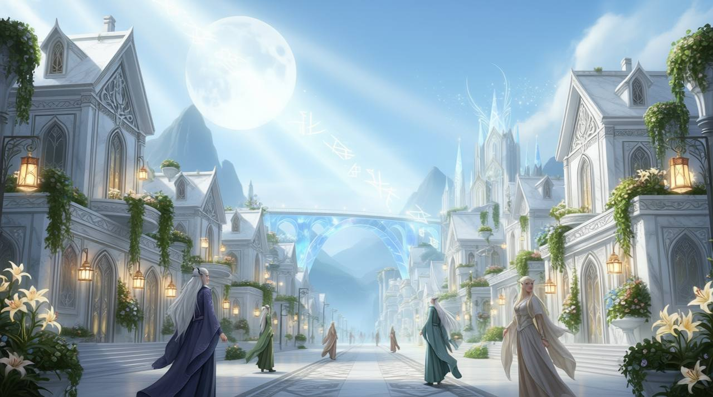
**Кадр:** Верхняя авеню, лунный луч
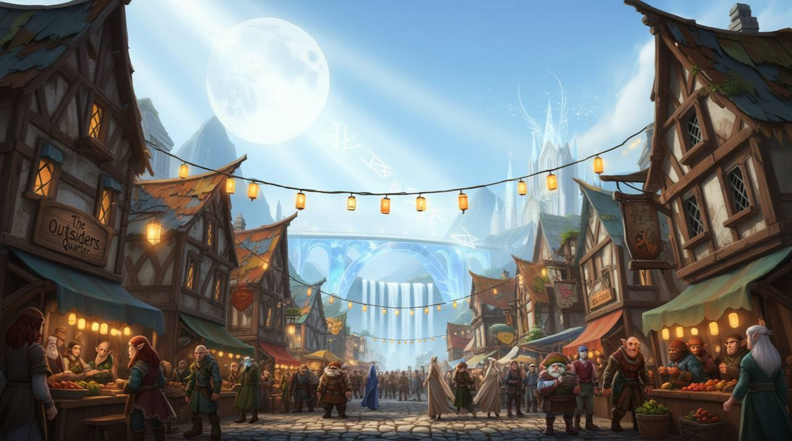
**Кадр:** Район Пришельцев
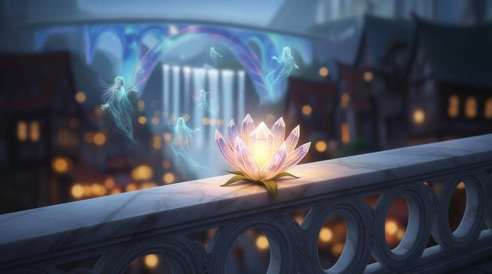
**Кадр:** Парапет и лотос
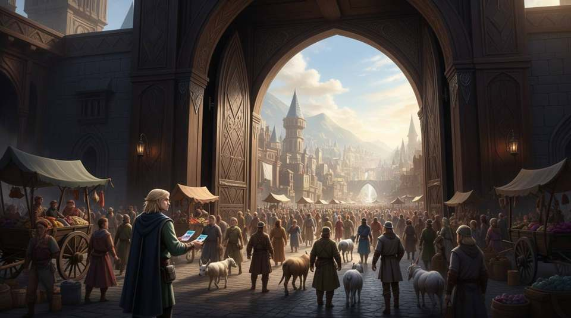
**Кадр:** Врата
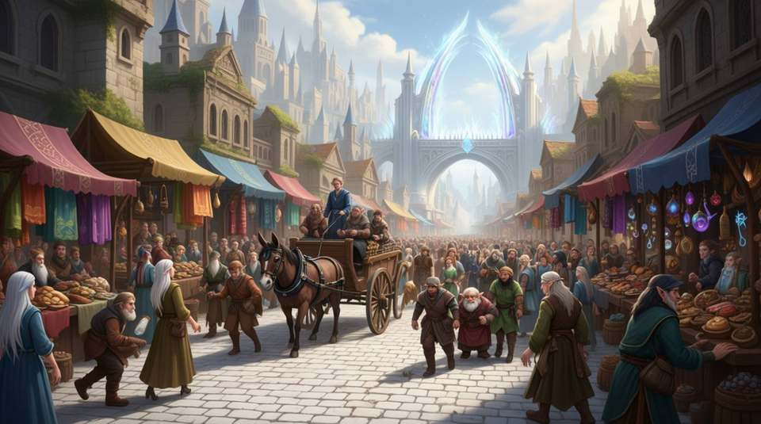
**Кадр:** Ось улицы к мосту
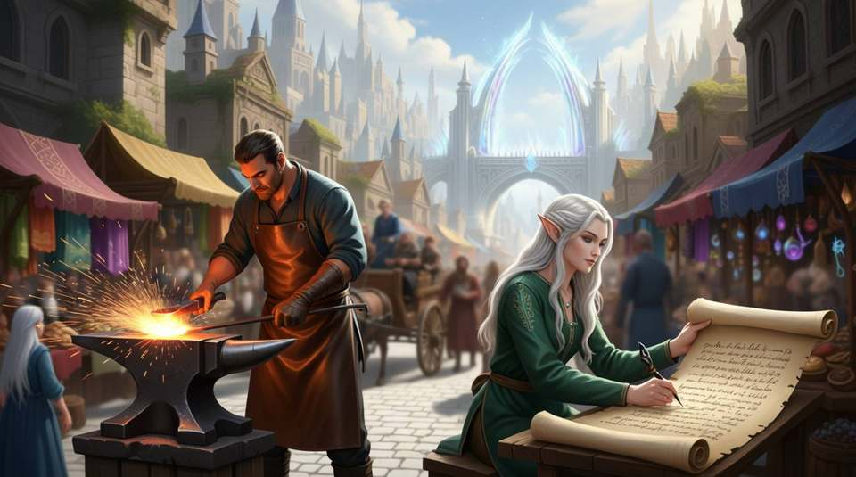
**Кадр:** Кузнец и писец
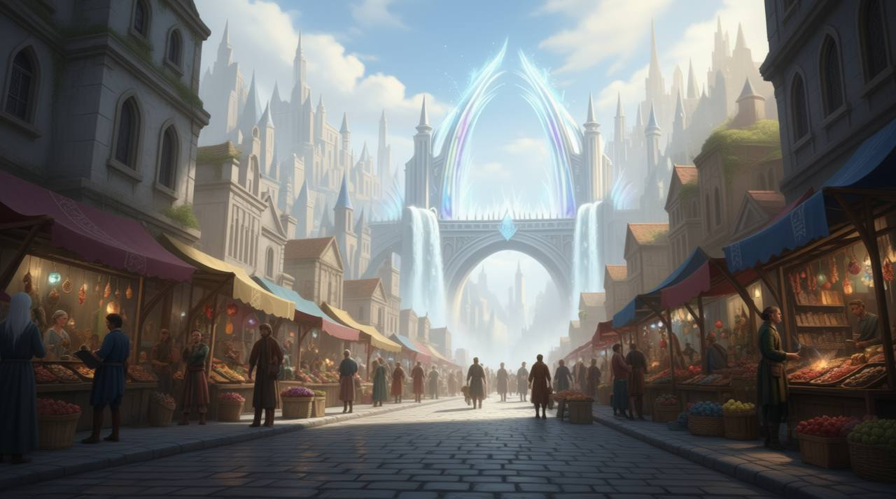
**Кадр:** Улица к арке моста
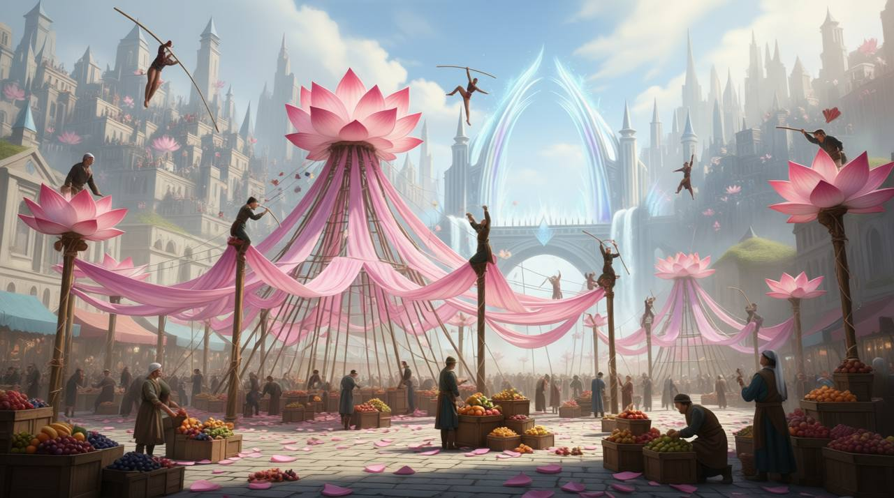
**Кадр:** Плацдарм с лотосами
**Кадр:** Ночной дворец и мост
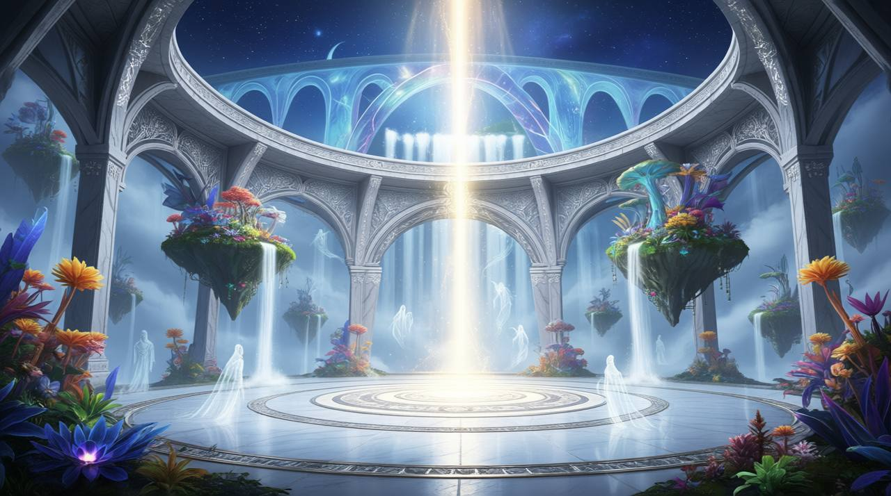
**Кадр:** Павильон и луч
Оглавление · ← 0 · Как вести · Далее → 2 · Сессия 1
2 · Сессия 1 — веди отсюда
Открой эту главу за столом. Ниже — полный скрипт хаба + картинки в нужных местах.
СЕССИЯ 1 — «Город без голоса» (общий хаб)
Цель: похороны → пустота без Маэстро → Милана почти говорит → выбор двери = выбор направления.
Длина: 3–4.5 ч при 1 боковом очаге + центре.
До стола
1. Слухи игрокам: уже в главе 1 · До стола.
2. Видение Элариона уже известно.
3. Старт: Кузница Фиалки = Колыбель.
4. Инвентарь: дневник + перо Маэстро; кольцо связи; 2 яйца в приюте.
Тайминг
| # | Бит | Мин | Обязателен? |
|---|---|---|---|
| 1.0 | Утро в приюте | 5 | да |
| 1.1 | Карта скорби + **один** боковой очаг | 15–30 | желательно |
| 1.2 | Центральный помост | 40–70 | **да** |
| 1.3 | Милана / кольцо | вплести | да |
| 1.4 | Двери направлений | 10–20 | **да** |
| 1.5 | Новость мира | 2 | да |
1.0 — Утро в приюте
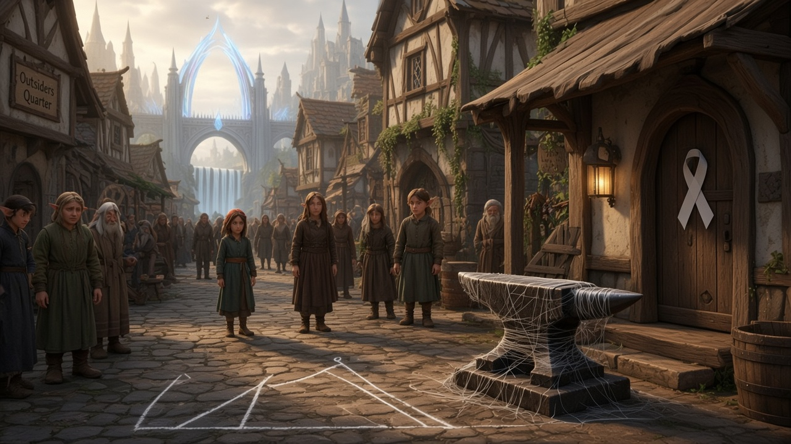
**Кадр:** Утро в Кузнице Фиалки
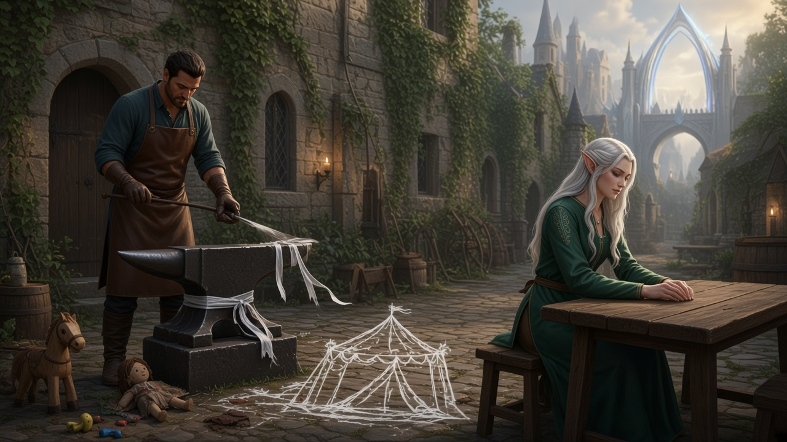
**Кадр:** Двор Колыбели
Сказать:
В Кузнице Фиалки пахнет остывшим углем и дешёвым ладаном. С улицы — не один колокол, а **много**: разные ярусы, разные храмы бьют вразнобой, как будто город не может решить, каким голосом плакать. Дети тише обычного. У порога — белая лента без записки. Яйца на месте.
| Если спросят | Ответ |
|---|---|
| Яйца / Хребет | «Пока все смотрят наверх. Не высовывать.» |
| Дневник | «Можно открыть сегодня — но похороны не ждут.» |
| Куда идти | Гонцы кричат очаги — см. 1.1 |
НПС на фоне: воспитательница Мираэль (полуэльфка) — подаёт хлеб, шепчет: «Верхний город открыли. Даже чужие флаги.»
1.1 — Карта скорби
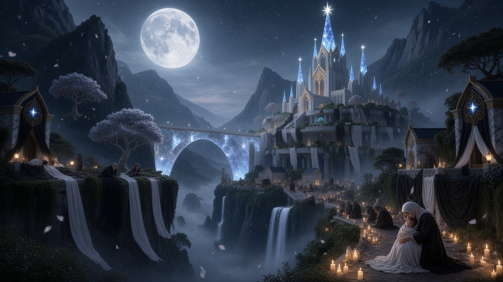
**Кадр:** Город в день похорон
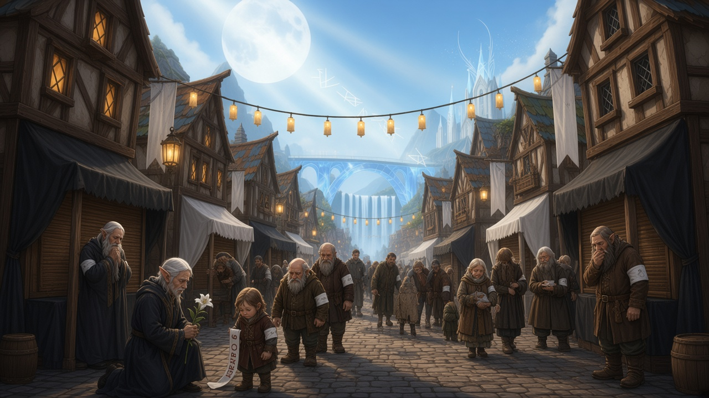
**Кадр:** Процессия · Район Пришельцев
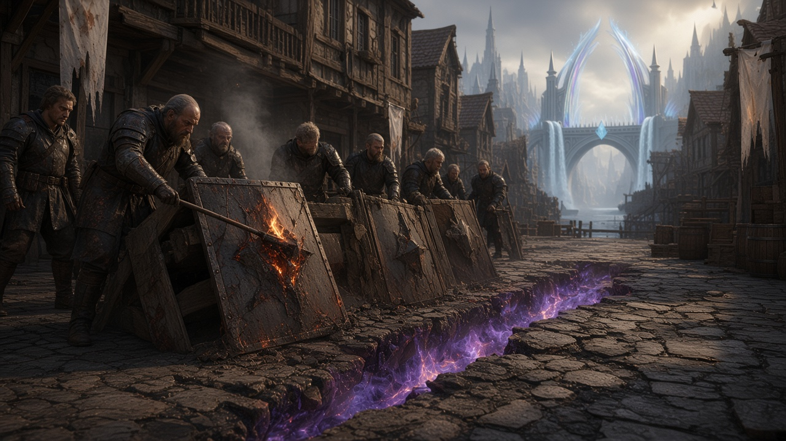
**Кадр:** Очаг B · баррикады низа
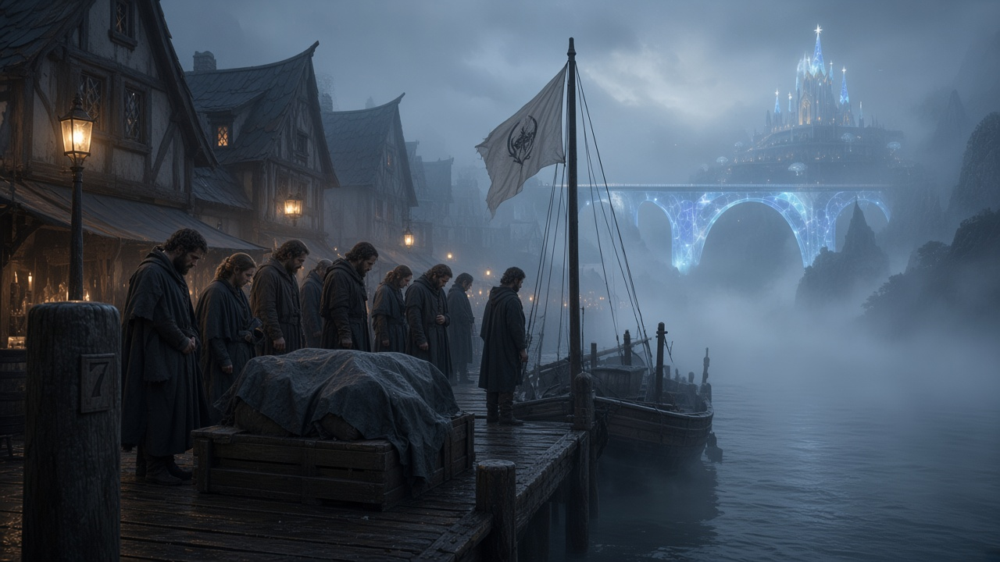
**Кадр:** Очаг C · порт
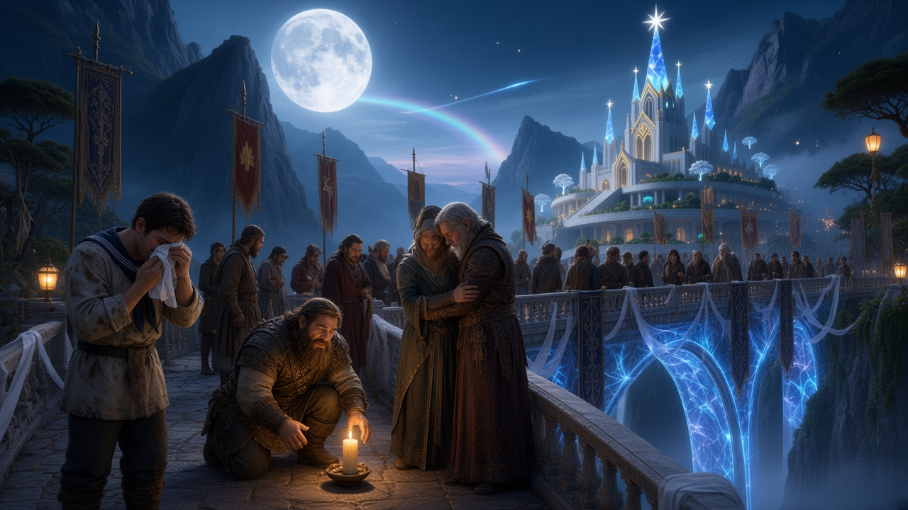
**Кадр:** Очаг E · Мост Предков / делегации
Сказать:
Лунный мост сегодня — один большой помин. Очаги по всему городу. Гонцы с белыми повязками кричат маршруты. У Моста Предков — иностранные флаги: Маэстро был нужен не только Аэлендору.
Правило: 1 боковой очаг (15–25 мин) + центр. Не отыгрывать все пять.
#### Очаг B — Низ / баррикады (→ mq-01 давление)
Где: Тар-Аминон, линия Дозора у «дышащего» края.
Сказать:
Здесь не белые ленты — копоть и мокрый пепел. Солдаты жгут на щите имена тех, кого Разлом забрал за неделю. Воздух над провалом улицы дрожит, как жар над кузней. Кто-то орёт, что Герои «гуляют наверху, пока нас жрут».
| НПС | Реплика / механика |
|---|---|
| Сержант **Колм Серый** | «Мэр хоронит. Мы — держим. Скажи наверху: без людей внутри раны баррикада — мясо.» Persuasion 12 успокоит толпу / провал — бросок камня (1 урон случайному ПК, символически) |
| Рядовой с перевязанными глазами | Слепой от вспышки раны: «Внутри… фиолетово. И холодно.» |
Крючок на дверь A: без входа через Купель низ не спасёшь.
#### Очаг C — Порт (→ соц / деньги / mq-06 слух)
Где: Портовая слобода, причал 7.
Сказать:
Матросы пьют молча. На мачте «Улова Дня» — белый флаг вместо вымпела фестиваля. Купцы считают убытки шёпотом: без Келебрима фестиваль — дыра в кассе и в небе.
| НПС | |
|---|---|
| Капитан **Шива «Соль»** (человек) | «Он мирил пошлины лучше любого суда. Теперь Хребет нюхает трюмы.» |
| Купец со льдов **Брорр** (дварф) | Слух mq-06: «На севере мёртвые ходят строем. Не сказки. Я видел щиты дварфов в ряд против тумана.» Без имени Лианэи. |
#### Очаг D — Кузница / дети (→ характер / яйца)
Где: двор Колыбели.
Сказать:
Дети связали белые нитки на наковальню. Кто-то нарисовал мелом шатёр — и зачеркнул. Тишина громче колоколов.
| НПС | |
|---|---|
| Мираэль | «Они спрашивают, когда Маэстро вернётся учить фокусам. Я сказала: он учит иначе.» |
| Ребёнок **Тим** | Тянет за рукав самого «мягкого» ПК: «Ты принесёшь его голос обратно?» |
Моральный бит: пообещать / честно отказать (Insight детей 10 — чуют ложь).
#### Очаг E — Делегации (→ политика / mq-03 намёк / Сильванара)
Где: шатры у Моста Предков.
| Делегация | Кто | Что хотят / дают |
|---|---|---|
| **Драконий Хребет** | Офицер **Кезарр Тал** (драконорождённый, медь) | «Соболезнования союзнику.» Insight 14: считает сумки; яйца не произносить. Крюк mq-06 меч / давление |
| **Двор / Сильванара** | Посланец **Леди Ириэн** (эльфка) | Венок «от Сильванары, матери Люмиэля». Сама королева не приехала. Слух: она может снова взять престол |
| **Тёмные леса** | Атташе **Вэсс Нитехват** (осторожный) | «Перемирие держится. Хаос на похоронах нам не нужен.» Крюк войны |
| **Лес Хранителей** (тихо) | Наблюдатель в зелёном капюшоне, **без имени** | Не говорит. Religion/Nature 15: «лесной знак Хранителей». Крюк mq-03 — Элессар слушает издали |
Сказать общий кадр:
Чужие флаги не снимают. Сегодня скорбь — тоже политика.
#### Слой 2 слухов (выдать ≤2 за сессию)
| id | Текст | Крючок |
|---|---|---|
| S2-a | «Тандил сам ведёт церемонию — не доверил жрецам одним.» | власть |
| S2-b | «В толпе ищут родню Маэстро.» | Милана |
| S2-c | «Сильванара прислала венок — сама не приехала.» | трон |
| S2-d | «У края этой ночью кричали; Дозор недосчитался двоих.» | mq-01 |
| S2-e | «Купель закрыта; маги и дроу у раны.» | дверь A |
| S2-f | «Без одобрения хранителей в прореху не пускают.» | вход |
| S2-g | «Велиан ушёл мстить Разлому — писем нет.» | mq-04 |
| S2-h | «Со льдов пишут: мёртвые строем.» | mq-06 |
1.2 — Центральный помост
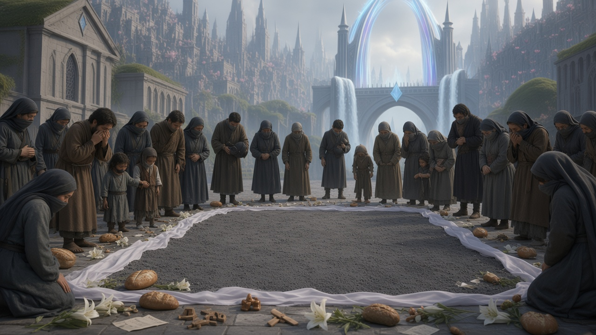
**Кадр:** Пепел шатра Маэстро
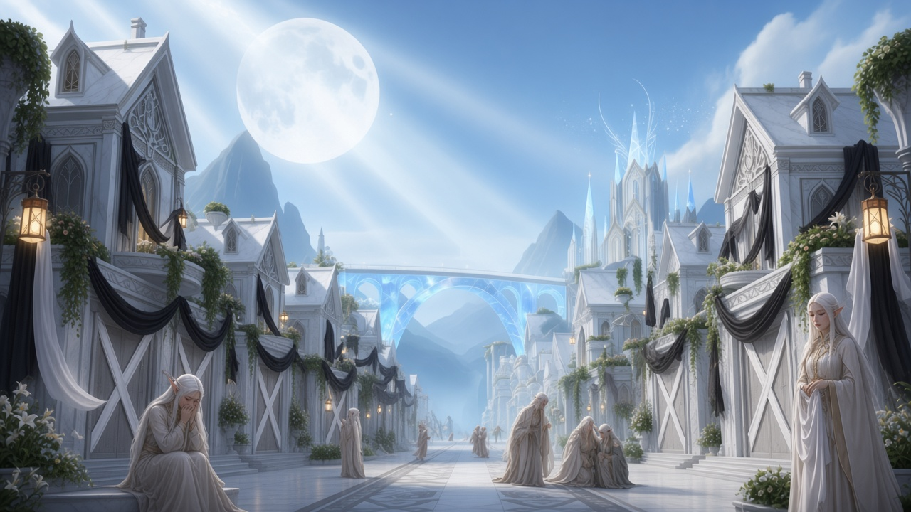
**Кадр:** Путь по верхней авеню
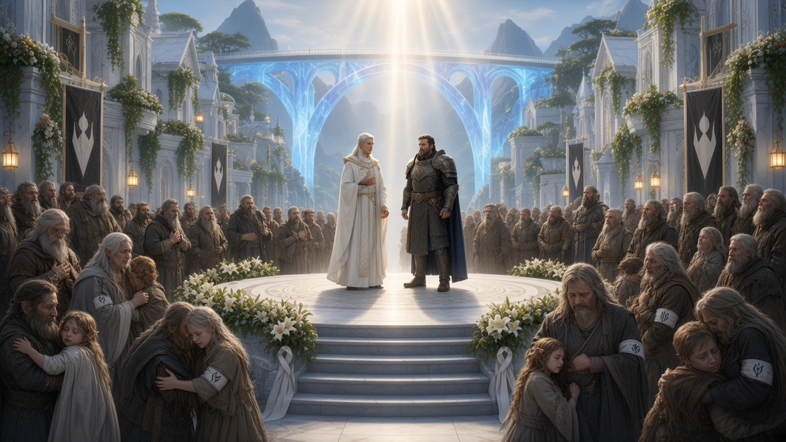
**Кадр:** Центральный помост
#### Селенис Безмолвная
*речь похорон*
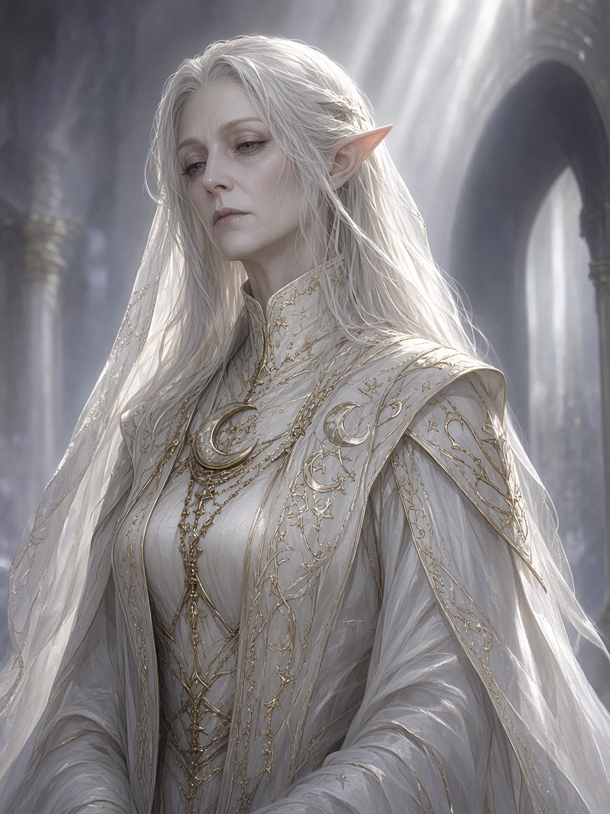
**Кадр:** Селенис Безмолвная
#### Тандил
*речь мэра*
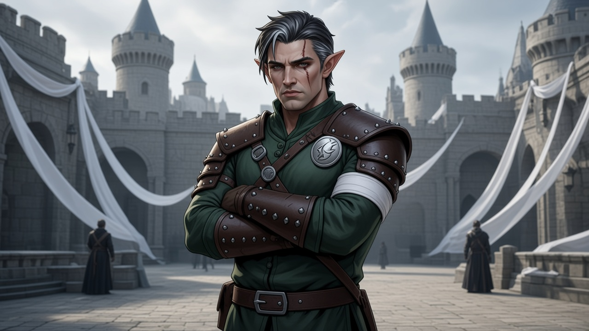
**Кадр:** Тандил
#### Тандил · база
*как выглядел до похоронного варианта*
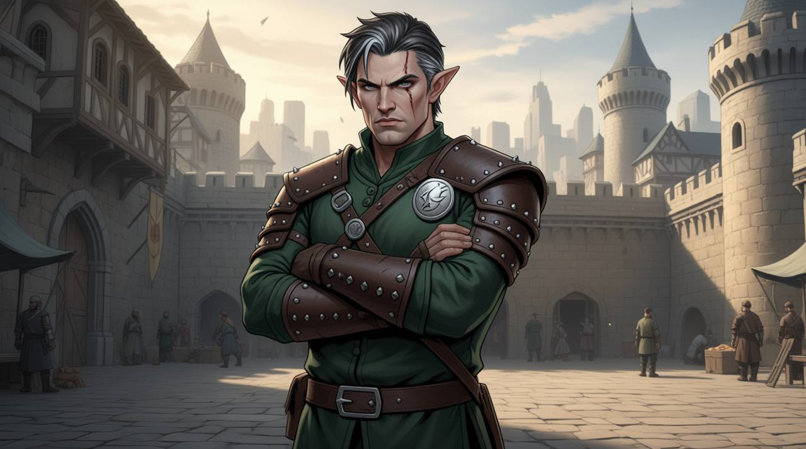
**Кадр:** Тандил · база
#### Кезарр Тал
*делегация Хребта*
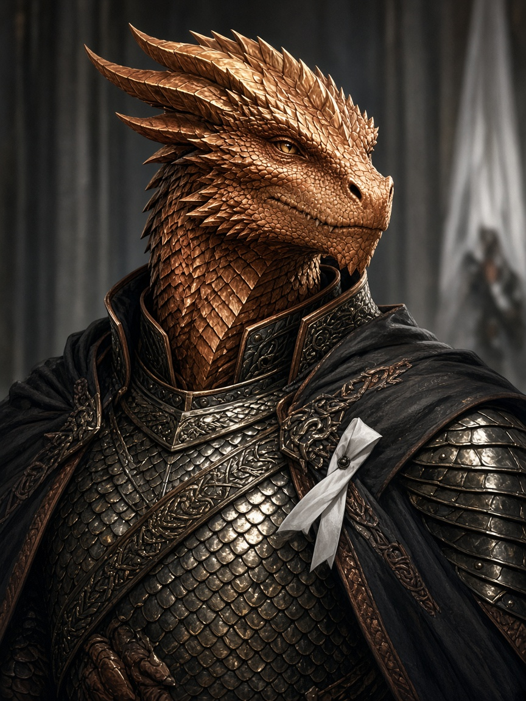
**Кадр:** Кезарр Тал
#### Леди Ириэн
*венок Сильванары*
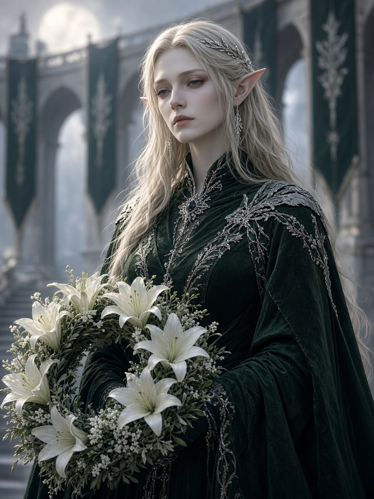
**Кадр:** Леди Ириэн
#### Брорр
*слух про льды*
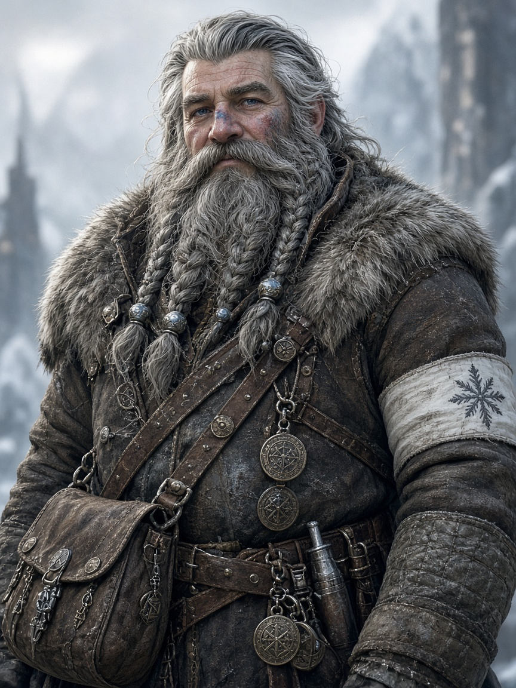
**Кадр:** Брорр
#### Сильванара
*слух о престоле (не обязательно на площади)*
**Кадр:** Сильванара
Где: Площадь Нисходящего Луча у Собора Безмолвного Звона.
На виду: Тандил · Селенис Безмолвная · патруль Хребта (Кезарр на краю, если видели в E) · делегации · толпа ярусов.
Атмосфера сказать:
Там, где годы подряд стоял шатёр фестиваля, — пустой прямоугольник пепла и белых лент. Ветер поднимает серую пыль. Город впервые за долгое время **не шумит ярмаркой**.
#### Речь Селенис (читать близко)
Братья и сёстры ярусов. Сегодня молчит тот, кто учил нас слушать звёзды и людей. Маэстро Келебрим… не в шатре. Не на фестивале. Не в совете шёпотом.
Собор не обещает, что боль уйдёт. Собор обещает: **имя не сотрут**.
Кто пришёл с венком — положите. Кто пришёл с долгом — несите дальше. Кто пришёл с тишиной — она сегодня свята.
Минута тишины. Дать игрокам отыграть.
#### Речь Тандила (сталь; внутри — горе)
Лунный мост не имеет права рассыпаться сегодня.
Маэстро Келебрим отдал городу больше, чем любой из нас успеет вернуть. Я… *(пауза)* …скажу это один раз: мне его не хватает. А потом — работа.
Разлом жрёт низ. Хребет стоит у стен. Война не взяла выходной на похороны.
Герои Аэлендора — вы на виду. Город смотрит. Страна смотрит. Чужие флаги смотрят.
Плакать будем, когда небо перестанет трескаться. Сегодня — держим ярусы. За Келебрима. За тех, кто ещё дышит в Тар-Аминоне.
#### Речь Героев (если сами)
1–2 минуты. Толпа: Insight DC 12 — страх / любовь / расчёт.
Мораль mq-05 (опц.): сказать правду про артефакты→демоны или молчать.
- Правда → шёпот ужаса; Тандил позже: «Спасибо. И проклятье тебе за честность.»
- Молчание → Милана (если узнает) читает как холод / сговор.
#### Узлы
##### Карманник → дневник
| Кто | **«Паучок» Нелл** — подросток, нанят культом/хаосом (не знает заказчика) |
| Механика | Passive Perception 14+ замечает руку; иначе contested Stealth 16 vs Perception |
| Успех партии | Нелл бежит; Athletics/Acrobatics DC 14 погоня по крышам 1 сцену → дневник цел; Нелл сдаёт: «Платили серебром. Сказали: книга мага.» |
| Провал | Дневник уходит на 1 сцену; найти Investigation 15 у рынка или кольцо Миланы подскажет направление |
##### Пустой шатёр
Подойти к пеплу: Investigation 12 — след когтя демона старый (уже знали); новый — отпечаток женской туфли (Милана? или воровка).
##### Кезарр (Хребет)
Не атакует. Insight 14: считает крылья и сумки. Intimidation/Persuasion 15 — отстаёт на сегодня.
1.3 — Милана / кольцо
#### Милана
*дочь Маэстро · почти-речь · кольцо*
**Кадр:** Милана
Факты: связь уже есть; помогали; она собирает инфу; кольцо Маэстро.
Сказать:
Кольцо теплеет — знакомое давление, но тембр моложе, жёстче от слёз.
*«Я здесь. Я вижу вас. Я должна…»*
Шум толпы. Она обрывает.
*«Не сейчас. Не с помоста. Держите дневник. Я на связи.»*
Кольцо стынет. На краю площади капюшон разворачивается и растворяется между шатрами делегаций.
Insight DC 13: это она, остановила себя.
Если крикнуть имя вслух — толпа шепчется; она не возвращается сегодня.
После (если ищут дверь C): кольцо: *«Северные склады. Ночь. Одна. Без толпы.»* → короткая сцена 10 мин: она просит не открывать «третью стражу» дневника при свидетелях; уходит. Имя для партии можно закрепить: Милана.
1.4 — Двери = выбор направления
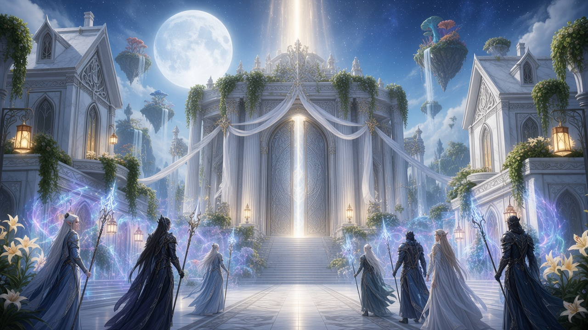
**Кадр:** Если смотрят на Купель — подход
Сказать (Тандил после церемонии — сам, не гонец):
Город отплакал полдня. Дальше — не поминки. Дальше — выбор, куда нести долг.
#### Тандил — два плана Разлома (лок mq-04 A)
Когда: обязательно, если партия смотрит на дверь A или F (или спрашивает про Купель / Велиана). Это первый лор про два плана — не Элиан.
Купель — одна рана. Но маги открывают из неё **разные потоки**.
Один — **фиолетовый**: план демонов. Туда бьёт легион. Туда же — клык, маяк, то, что жрёт низ.
Другой — **чёрный**: план мёртвых. Туда ушёл **Велиан** с отрядом. Не «мстить дыре наугад» — операция.
Сами вы поток не включите. **Элиан** и его люди выбирают, что открыть — и за открытие всегда **плачут**: из раны лезет то, чей план зовёте. Демонов — демоны. Мёртвых — мертвецы и тот, кто ими крутит.
Без слова магов шаг внутрь я оформлю как самоубийство. Хотите войти — **договаривайтесь**. Я могу поручиться. Силой ломать Купель — значит отдать низ городу.
Insight 12: он не блефует про выброс; боится обоих потоков одинаково.
| Дверь | Куда физически | Направления | След. сессия |
|---|---|---|---|
| **A · Разлом (демоны)** | Купель; просить Элиана открыть **фиолетовый** | **mq-01** (+ mq-02 внутри) | **эта** сессия 2 |
| **B · Дневник** | Кузница; чтение = время | mq-05 ядро | сессия «страницы» / потом снова двери |
| **C · Милана** | ночь / склады | mq-05 | контакт; потом двери |
| **D · Лес** | Элиэлор / портал (камень!) | **mq-03** | камень → Серебряный Порог |
| **E · Льды / земля** | Кавил/Тандил/Брорр | **mq-06** | охота на мирские арты |
| **F · Велиан (мёртвые)** | та же Купель; просить открыть **чёрный** | **mq-04** | сессия 2 «чёрный поток» / стык с A |
| **G · Политика** | Ириэн / Сильванара | фон / трон | не победа арки 3 |
Несколько ПК могут тянуть в разные стороны — один групповой выбор на сессию 2 (или split только с ok мастера).
A и F — одна Купель, разный открытый проход (не развилка глубоко внутри).
Клифф сессии 1: дверь названа. Если A или F — Купель + торг с магами.
1.5 — Новость мира (ровно 1)
| d6 | Новость |
|---|---|
| 1 | Орден у Сильванора: стены держат, гонцы просят людей |
| 2 | Хребет обыскал склад «на яйца» — без публичного обвинения Героев |
| 3 | Со льдов: мёртвые строем (без Лианэи) |
| 4 | Атташе Тёмных лесов просит тишины на похоронах — и получает |
| 5 | В Тар-Аминоне ночная вылазка: +1д6 пропавших, если не было очага B |
| 6 | Леди Ириэн остаётся «на неделю» — давление трона |
Дневник — если дверь B (seed, не вся книга)
Сказать:
Перо само тянется к бумаге. Чернила находят строку без твоего решения.
Выдать 1 страницу-крючок (вслух):
*«Если тело не вернуть — ищите меня на плане, где мёртвые ещё помнят имена. Не ремеслу демонов. Дочери — не открывать третью стражу при чужих глазах. Кольцо — не игрушка: оно держит голос, пока голос ещё чей-то.»*
Дальше чтение = отдельный заход / время. Оглавление уже канон.
XP сессии 1
| `xp_quest` | 1000–1500 группе |
| `xp_personal` | 250–500 за речь / кольцо / сильный очаг D |
| Бой | обычно нет; погоня за Неллом — 100–200 xp |
Оглавление · ← 1 · До стола · Далее → 3 · Дверь A
3 · Дверь A · Маяк душ
Открой, если после похорон выбрали Разлом (фиолетовый поток).
СЕССИЯ 2 — «Рана в Купели» (дверь A · фиолетовый поток)
Цель: социал (одобрение магов) → открытие потока → выброс врагов → проход → пустошь → Маяк душ → исход с Сарель.
Не цель: Алтарь / Филактерий / Око / Кардиан.
*(Дверь F / чёрный поток = mq-04; полный скрипт: глава 4 · Дверь F.)*
Длина: 3.5–4.5 ч (добавлен бой открытия).
Биты
| # | Бит | Мин |
|---|---|---|
| 2.0 | Подход | 5 |
| 2.1 | Социал + инструктаж (одобрение) | 20–30 |
| 2.2 | Осмотр раны | 10–15 |
| 2.3 | **Открытие потока → выброс демонов** | 15–25 |
| 2.4 | Проход (сейвы + заплыв) | 25–40 |
| 2.5 | Приземление | 5 |
| 2.6 | Маяк / Сарель / охотник | 40–70 |
| 2.7 | Клифф | 5 |
2.0 — Подход
**Кадр:** Подход к Купели
#### Элиан Вечный Узел
*одобрение потока*
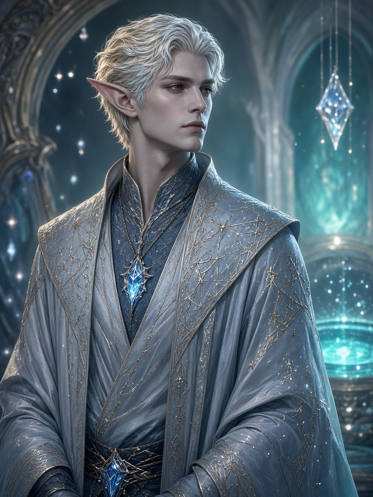
**Кадр:** Элиан Вечный Узел
#### Ваэра Ночной Клинок
*дроу-хранитель*
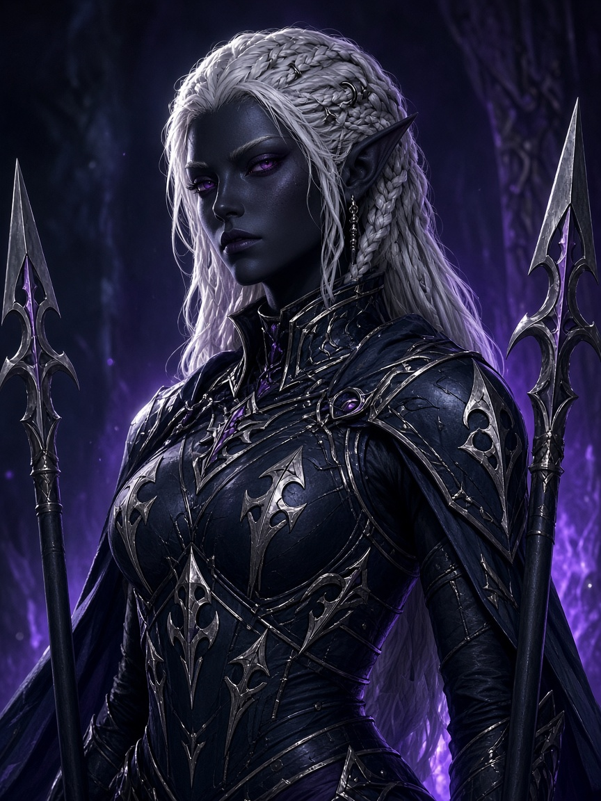
**Кадр:** Ваэра Ночной Клинок
Сказать:
Купель Вечных Звёзд пахнет озоном и мокрой пылью, не благовониями. У ступеней — кордон: эльфы-маги в серебряных перевязях и **дроу** с копьями, на которых выжжен знак Зеркала. Паломников нет.
Perception 12: в лазарете стоны тех, кого обожгло плетение.
2.1 — Социал: одобрение магов + инструктаж
| Кто | |
|---|---|
| **Тандил** | зачем пускают; напоминает про два потока (уже сказал в 1.4) |
| **Элиан Вечный Узел** | правила; **открывает** выбранный поток; **одобрение** |
| **Ваэра Ночной Клинок** | не пустит без печати Элиана |
Лок: вход только с одобрения магов. Путь = социальный (договор), не штурм Купели.
#### Тандил
Я не отправляю вас «посмотреть дыру». Мне нужен факт: что там держит напор — и чтобы вы **вернулись**.
Маэстро бы пошёл первым. Маэстро мёртв. Слушайте Элиана. Без его слова шаг внутрь я оформлю как самоубийство, не как героизм.
Сегодня просите **фиолетовый** поток — план демонов. Чёрный не трогаем, пока не скажете иное: туда ушёл Велиан, и открытие чёрного вытащит **мёртвых** в этот зал.
#### Элиан
Здесь стояло Зеркало. Теперь — **рана**. Плетение держит края; дроу — клятву крови со времён целого Зеркала.
Мы открываем поток. Не «прыгаете в цвет». **Мы** тянем нить — фиолетовую или чёрную. Сегодня, если согласимся: **демоны**.
Когда поток встаёт — рана **отвечает**. Из неё лезет то, чей план зовёте. Будьте готовы драться **здесь**, в Купели, до входа.
Проход ≈ пять минут. Невесомость. Фиолетовые сгустки. Держитесь холодной звезды-выхода.
На той стороне — пустошь и **Маяк душ**: там жгли пленных. Легион, говорят, бросил маяк. Не ждите договора с Бездной.
Условия: (1) не рвать руны сдерживания изнутри без нужды; (2) метка возврата — один осколок Купели на группу; (3) перевязать кровотечение до входа.
#### Одобрение = социальный узел (обязателен)
| Путь | Как | Итог |
|---|---|---|
| **A · Договор** | Уважение к Ваэре + ясные цели + согласие с условиями Элиана | печать + метка; Элиан открывает поток |
| **B · Торг** | Persuasion **15** (или Insight 14 → Persuasion 13): «город / низ / возврат») | как A |
| **C · Поручитель** | Тандил: «я поручитель» — если партия сорвала тон, но не хамила Ваэре | как A; долг Тандилу |
| **Провал** | Хамство / «сломаем рану» / отказ условий | вход закрыт **сегодня** → mq-01 liveliness +1; выброс без партии всё равно может случиться за кадром |
Провал торга + хамство: вход закрыт сегодня → mq-01 liveliness +1.
Одобрение даёт: метка (серебряный осколок, action: раз в день Advantage на сейв vs выброс раны при возврате — вкус).
#### Ваэра (коротко)
Клятва старше вашего фестиваля. Рану не «побеждают» мечом с этой стороны. Идите — или уйдите. Не топчите руны.
2.2 — Осмотр раны
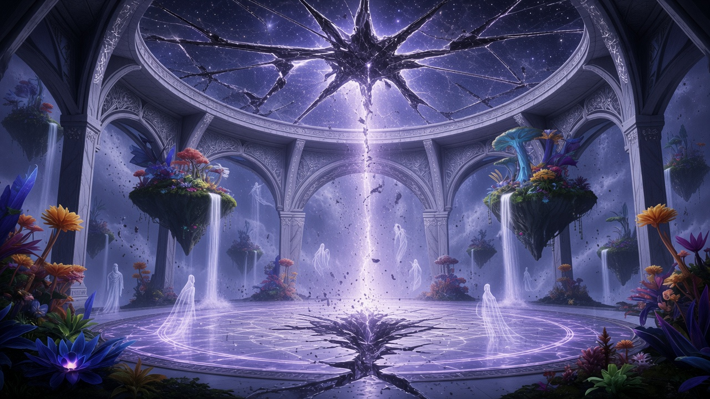
**Кадр:** Фиолетовая рана Зеркала
Сказать:
Половина купола цела. Половина — чёрная паутина трещин в холодном серебре. В центре воздух **разрезан**: серебряная рана на месте Зеркала. Пепел падает вверх и снова вниз. За плёнкой — фиолетовая тишина *(пока поток не открыт)*. Крыло архива — обвал. Кельи = лазарет.
| Навык | DC | Результат |
|---|---|---|
| Arcana | 14 | плетение живое; удар по рунам = выброс в город (4к10 force в радиусе, сюжетно катастрофа) |
| Religion | 14 | клятва дроу древнее текущего Разлома |
| Investigation | 13 | отчёт: трое лезли без метки — двое трупы с пустыми глазами, один «поёт фиолетовым» в лазарете |
| Medicine | 12 | кровь усиливает дрожь краёв |
| Perception | 15 | за раной на миг — силуэт клетки/цепей (Маяк) |
Поговорить с обожжённым в лазарете (Илвесс, эльф-маг): «Сгустки… как рыбы. Не трогай руками. Голос предлагал силу. Я сказал нет. Руки всё равно горят.»
2.3 — Открытие потока → выброс (демоны)
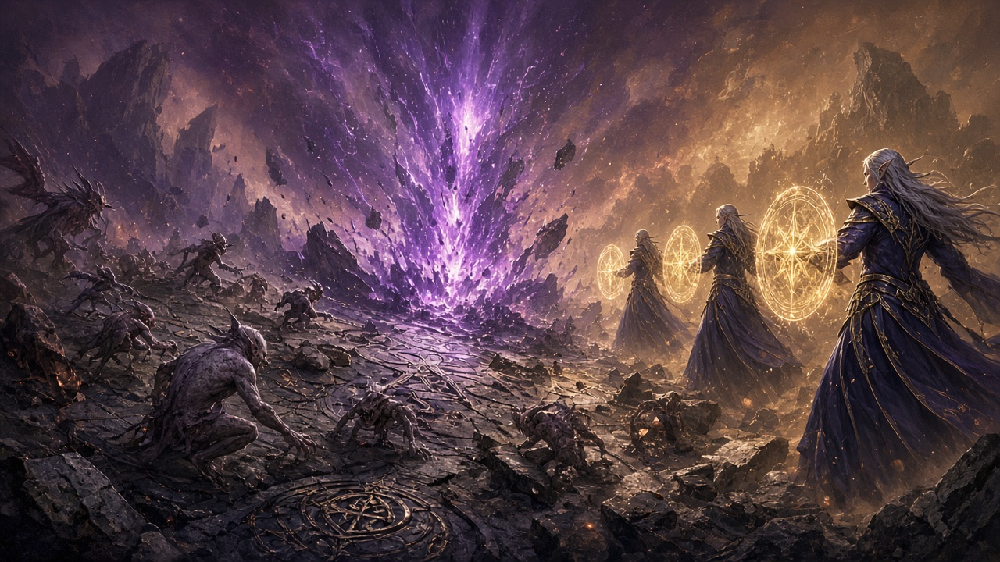
**Кадр:** Выброс демонов
После одобрения. Элиан + 2 мага тянут фиолетовую нить. Партия стоит у ступеней / рун (Ваэра: «не в плетение»).
Сказать:
Серебряная рана вспыхивает **фиолетовым**. Пепел летит горизонтально. Из разреза — запах серы и горячей меди. Что-то **выходит в зал**, пока поток ещё не держит форму.
#### Бой — выброс открытия (Купель)
| Сост | Статы |
|---|---|
| Волна | **3× дретч** ([dnd.su](https://dnd.su/bestiary/66-dretch/)) |
| Лидер волны | **1× квазит** ([dnd.su](https://dnd.su/bestiary/68-quasit/)) — скачет по рунам, не рвёт плетение |
| Тактика | дретчи на ближайших; квазит — невидимость → удар по кастеру/хилеру; руны = труднопроходимая полоса (не ломать) |
| Союзники | Ваэра держит периметр (не умирает); 1 маг Элиана может *Sacred Flame*-эквивалент раз в раунд по дретчу |
| Победа | поток **стабилен** — фиолетовая тишина зовёт внутрь |
| Бегство партии | поток схлопывается; вход сегодня закрыт; город +1 раненый маг |
*(Чёрный поток / mq-04: вместо демонов — мертвецы + некромант; тот же бит, другие статы — в spine mq-04.)*
2.4 — Проход
**Кадр:** Фиолетовый проход
Сказать при входе:
Город гаснет, как свеча под ладонью. Невесомость. Фиолетовые сгустки плывут и зудят по коже. Вдалеке — холодная звезда выхода. Магия шумит в зубах.
Лок: *../../../../plot/canon-lock-2026-09-22-sessions12-mechanics.md*
#### A. Три сейва (по порядку, каждый ПК)
| # | Сейв | DC | Провал → до длинного отдыха |
|---|---|---|---|
| 1 | Con | **15** | весь урон **×2** |
| 2 | Int | **15** | ячейки **×½** вниз по уровням; нет ячеек → помеха Int checks/saves |
| 3 | Wis | **16** | **−10** Perception |
Открытая кровь → помеха на Con; при провале Con — фраза мёртвого (mq-04).
Вкусы успехов (сказать коротко):
Con: «Давление есть — кости держат.»
Int: «Карта планов мелькает и гаснет — ты не тонешь.»
Wis: «Голос предлагает силу за колено. Ты не кланяешься.»
#### B. Заплыв — индивидуально, DC 14
Athletics / Acrobatics / Arcana / Religion / Insight — один бросок на ПК.
| Исход | Эффект |
|---|---|
| Успех | чистый выход; обычный Dex |
| Провал | 1к8 force; **помеха** на Dex |
| Провал на 5+ | + *blinded* до конца след. хода после посадки **или** буксир (союзник-успех, реакция, Athletics 12): снять помеху Dex, оба по 1к4 force |
| Нат. 1 | как провал 5+; без буксира — blinded + помеха |
*Провал сказать:* «Свет уезжает. Сгусток хлещет. Пустота всё равно вытолкнет — кувырком.»
2.5 — Приземление
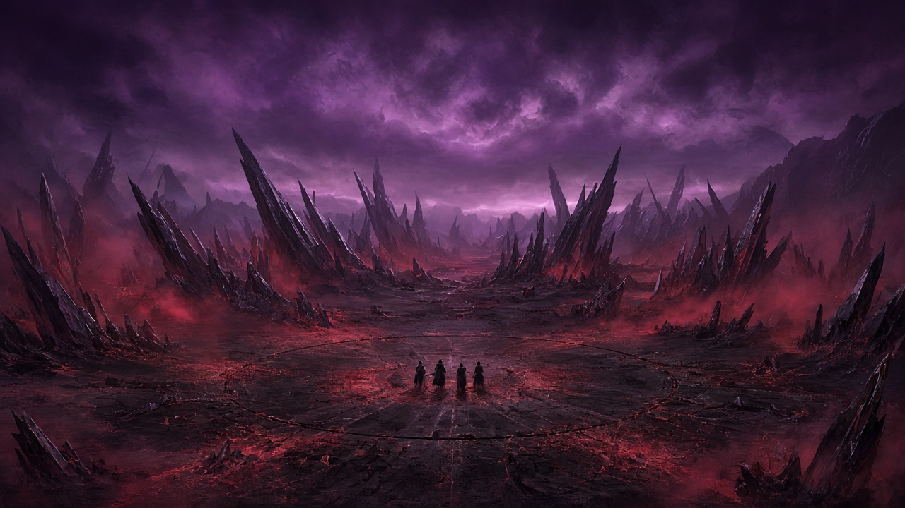
**Кадр:** Пустошь · приземление
Сказать: «Вас выплёвывает в воздух над чужой землёй.»
Dex DC 13 → провал 2к8 дробящего.
Учесть ×2 и помеху.
2.6 — Маяк душ
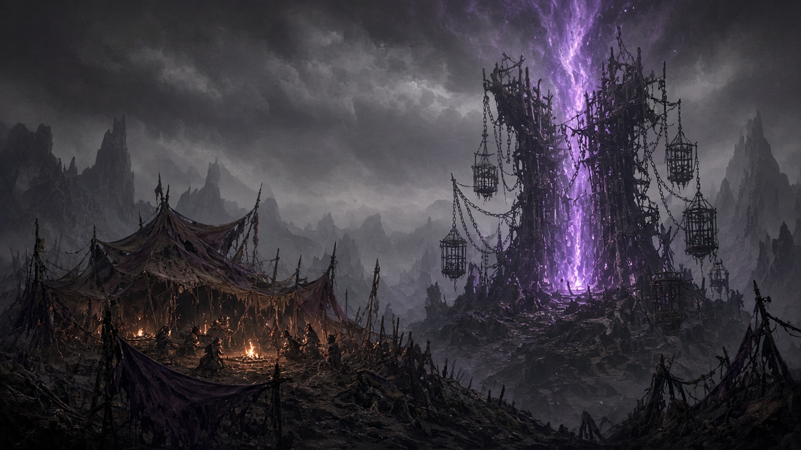
**Кадр:** Маяк и лагерь изгоев
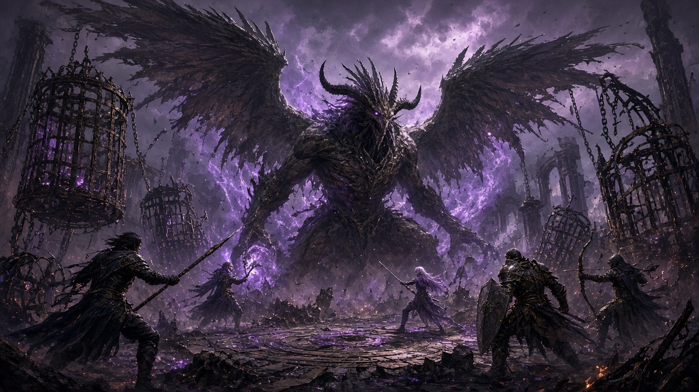
**Кадр:** Бой у клеток
#### Сарель Пепельный Договор
*лидер изгоев*
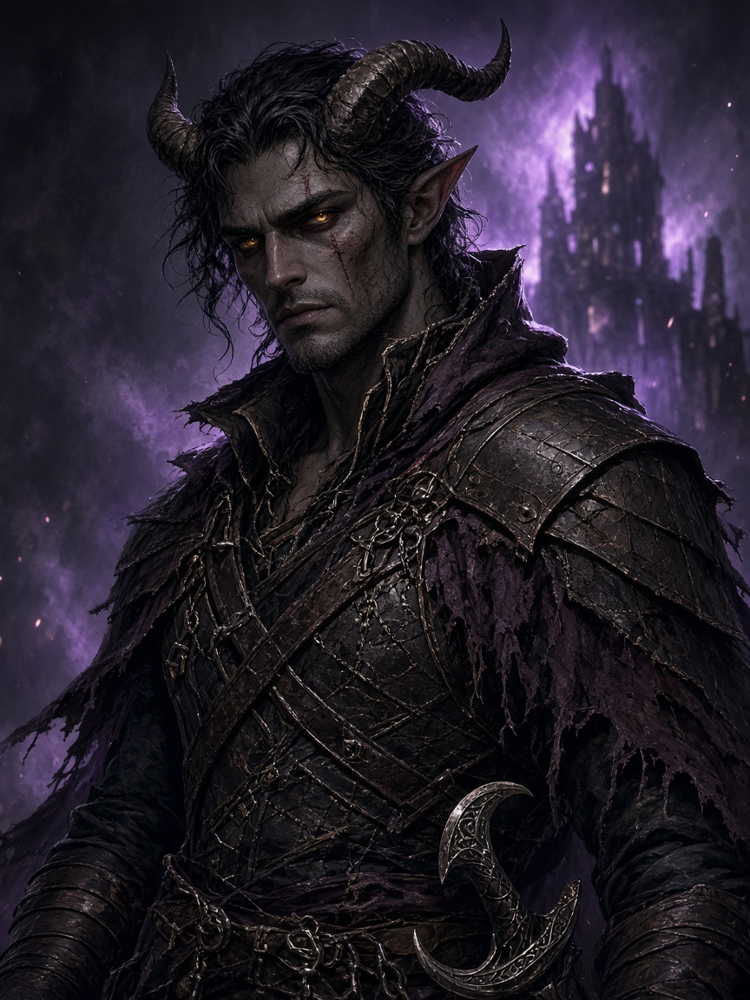
**Кадр:** Сарель Пепельный Договор
#### Кеш
*молодой изгой*
**Кадр:** Кеш
#### Орра
*руны*
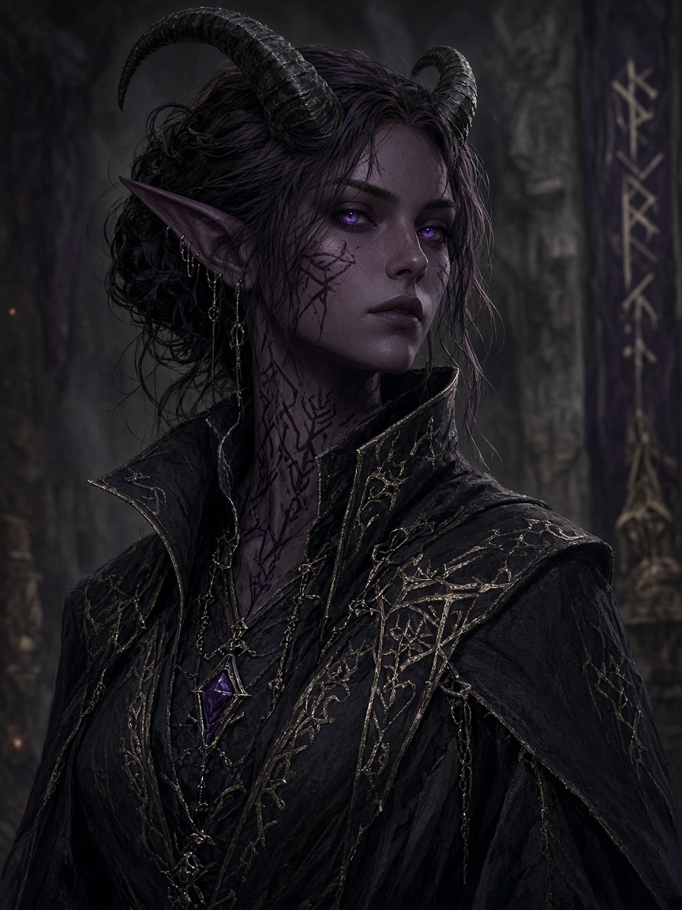
**Кадр:** Орра
#### Сборщик Огарков
*босс*
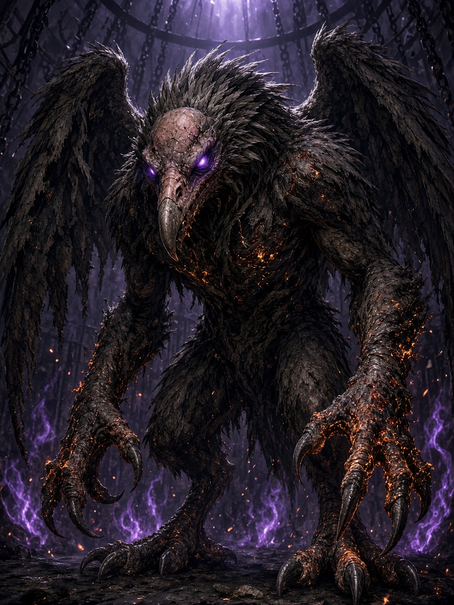
**Кадр:** Сборщик Огарков
Side (не spine): seed ../../../locations/mayak-dush/ · q-mayak-01…03. Ворота Купели: q-kupel-01…02 в ../../../locations/lunnyy-most/quests/.
Сказать:
Пепельно-багровая пустошь. Небо-синяк. Зубцы чёрного стекла. Запах меди и горячего камня.
Вдалеке — грязно-фиолетовый столб: **Маяк душ**. Клетки, цепи, выжженные круги. Тихо. Слишком тихо.
Первые 30 секунд: Survival/Perception 12 — следы копыт и волочения к маяку; свежие — тифлиньи; старше — демонические, уходят к дымам на горизонте.
#### Лагерь изгоев
| НПС | |
|---|---|
| **Сарель Пепельный Договор** | лидер; язвительная |
| **Кеш** (тифлинг, молодой) | дрожит; «Оно нюхает нас по ночам» |
| **Орра** (тифлинг, бывший культист) | молчит; знает руны маяка |
| +1–2 безымянных | прячутся в остове клетки |
Сарель:
Легион бросил дыру. Нам не легче: мелочь, что осталась *охотиться*, чует нас.
Нужен проводник — уберите то, что нас нюхает. Нет — сдыхайте сами. Силой гнуть можно… карта в голове у того, кто дышит.
Insight 14: угроза реальна; она не блефует про проводку.
#### Три пути (закрыть до клиффа)
| Путь | Как закрыть | DC / бой |
|---|---|---|
| **A Социал** | «Поможем — ведёшь» | Persuasion 15 → обязаны драться с охотником; после победы ведёт |
| **B Бой** | Сразу защитить лагерь | бой ниже → ведёт из расчёта |
| **C Сила** | Заставить без помощи | Intimidation 17 **или** бой до сдачи vs тифлингов (Сарель HP 45, AC 15, scimitar +5 1к6+3; Кеш/Орра = Bandit) → ведёт злобно; **предательство** на развилке позже (отметить) |
| **Отказ** | Уйти | Survival 16 каждый переход без проводника; маяк падёт за кадром |
#### Бой — охотник (финал стола)
Имя: Сборщик Огарков — врок Vrock, оставленный «подметать» души у брошенного маяка.
| Сост | Статы |
|---|---|
| Сборщик | **Врок** (dnd.su / MM); HP можно −20 если партия в тяжёлых дебаффах прохода |
| Помощь | **2× дретч** ([dnd.su](https://dnd.su/bestiary/66-dretch/)) — выходят на 2-м раунде с фланга клеток |
| Тактика | раунд 1: Сборщик на тифлингов (Сарель в приоритете); крик Сарель — «не дайте ему петь!» = сбить **Споры** (*Spores*, действие врока) / прервать концентрацию |
| Победа | Сборщик падает; дретчи бегут к дымам |
| Сарель 0 HP | проводник потерян, если нет Орры (Persuasion 16 уговорить Орру вести за полцены-страха) |
Поле: полуразрушенный круг ритуала — труднопроходимая местность в клетках; свет маяка даёт dim light 30 фт.
Трофеи: 80 зм в пыли клеток; осколок души-цепи (uncommon focus: 1/день Advantage на Intimidation vs fiend 1 мин); карта-царапина Сарель: «дым / кровь / не сюда».
2.7 — Клифф
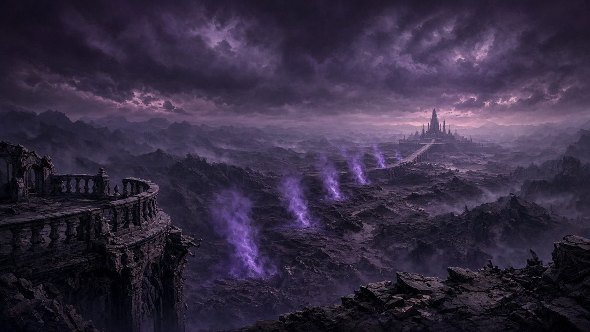
**Кадр:** Клифф · дымы к Алтарному тракту
Сказать:
С обломка маяка — цепь дымов, где пустошь густеет. Сарель (если ведёт) кивает: «Туда легион жрёт кровь. Новое место силы. Сюда они не вернутся, пока есть кого жечь там.»
Кардиана нет. Маяк за спиной мерцает слабее.
Новость: легион переехал к Алтарному тракту = сессии 3–7 spine.
XP сессии 2
| Мобы | по MM (включая выброс открытия) |
| `xp_quest` | 2500–3500 |
| `xp_personal` | 250–500 (Вирра / Грок / кастер на Int) |
Если не дверь A
Сессия 2 не этот файл. После похорон:
| Дверь | Prep следующего |
|---|---|
| B/C | mq-05 + book-chapter / Милана |
| D | [глава 5 · Дверь D](05-dver-d.md) (камень · Порог · Силвания/Малфурион) |
| E | mq-06 акт 0 |
| F | [глава 4 · Дверь F](04-dver-f.md) (жертва · выброс undead · Причал + Лайра) |
Чеклист мастера «мелочи»
- [ ] Слухи до игры выданы
- [ ] Выбран 1 боковой очаг
- [ ] Речи Селенис + Тандил
- [ ] Кольцо / Милана
- [ ] Дверь названа вслух; если A/F — Тандил про **два потока**
- [ ] 1 новость мира
- [ ] Если A: **социал** одобрения → **выброс демонов** → метка → 3 сейва → заплыв → Dex → Маяк → путь A/B/C/отказ → Сборщик
- [ ] Опц. side Купели / Маяка (не блокируют клифф)
- [ ] Дебаффы прохода записаны на листах до длинного отдыха
Дальше на круге 1: случайные вставки легиона — *(вставки — позже / liveliness)*
Оглавление · ← 2 · Сессия 1 · Далее → 4 · Дверь F
4 · Дверь F · Серый Причал
Открой, если выбрали чёрный поток / Велиана.
Быстрые кадры главы
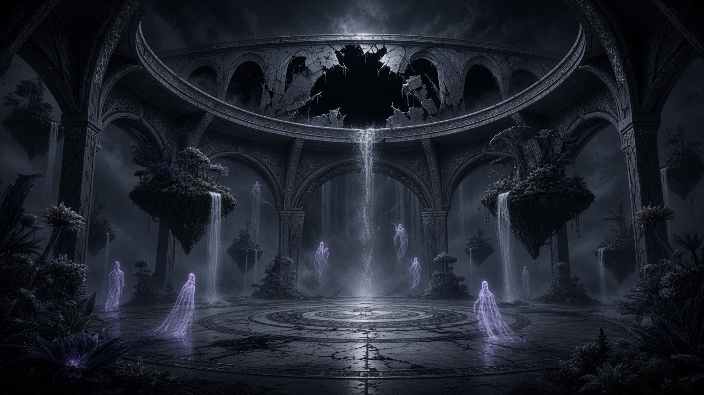
**Кадр:** Чёрная рана Купели
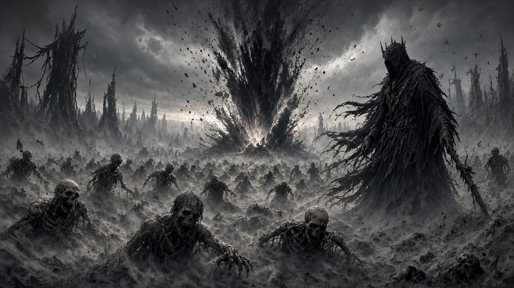
**Кадр:** Выброс нежити
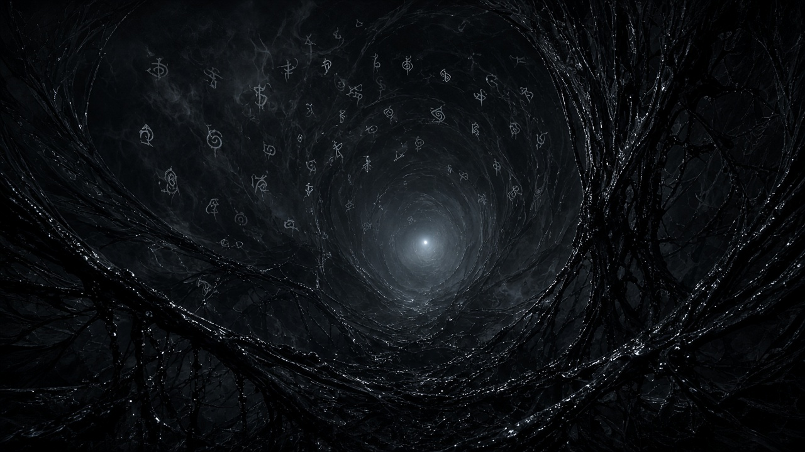
**Кадр:** Чёрный проход
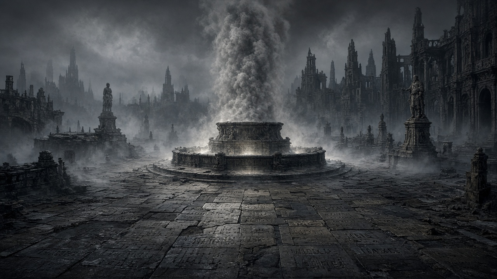
**Кадр:** Площадь Угасших Имён
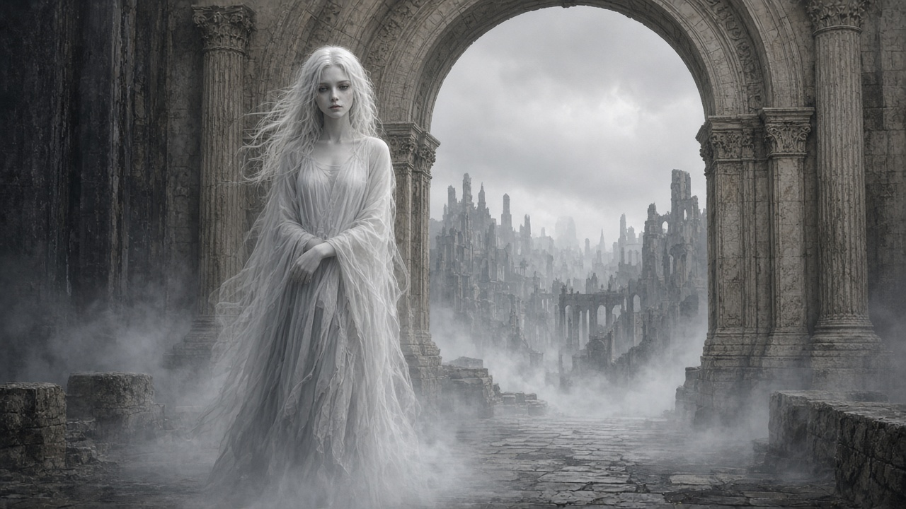
**Кадр:** Лайра у арки
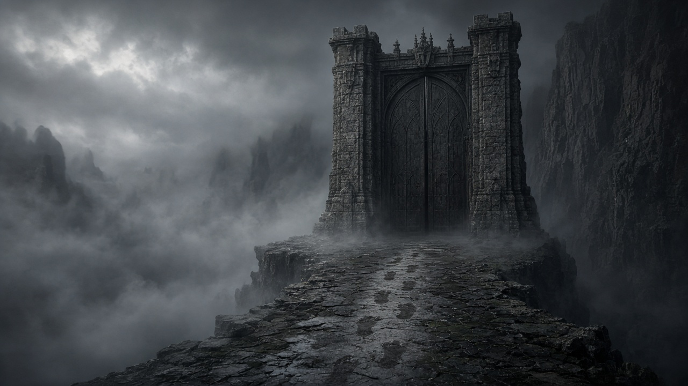
**Кадр:** Ворота Края
Лица главы
#### Лайра Пепельная
*встречающая*
**Кадр:** Лайра Пепельная
#### Велиан Полутень
*цель ~с.6*
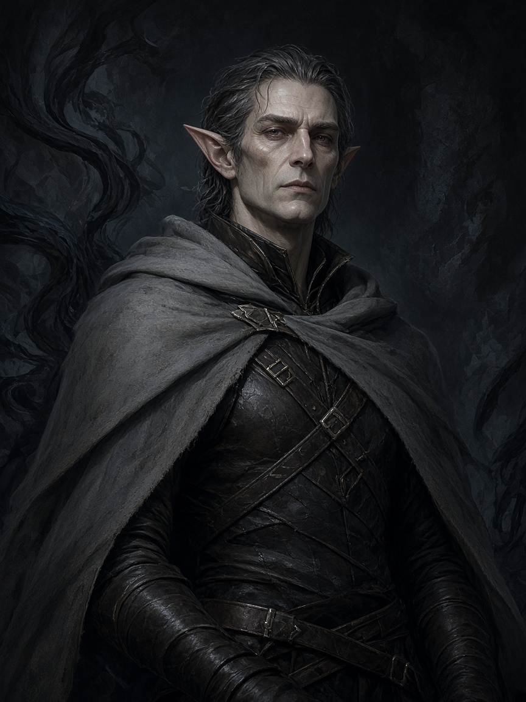
**Кадр:** Велиан Полутень
#### Каэлор Крайний
*ворота*
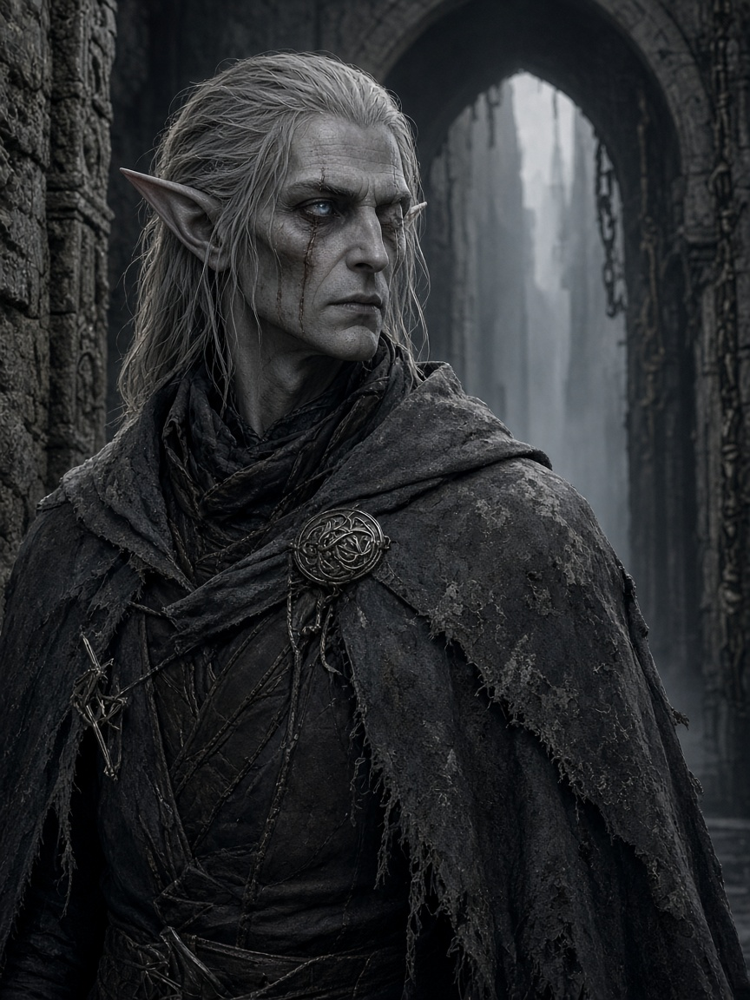
**Кадр:** Каэлор Крайний
#### Сильвен
*отряд*
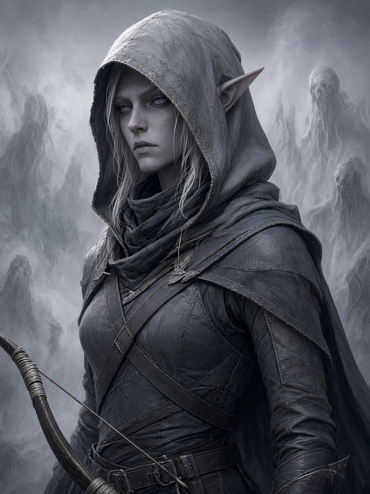
**Кадр:** Сильвен
#### Наэра
*отряд*
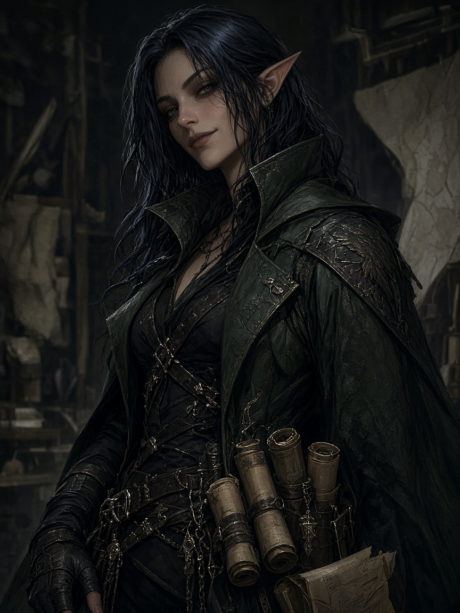
**Кадр:** Наэра
#### Корел
*отряд*
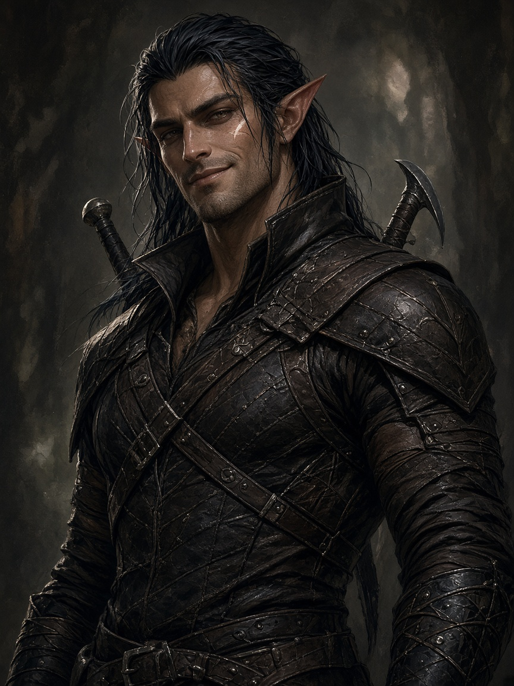
**Кадр:** Корел
#### Элисс
*отряд*
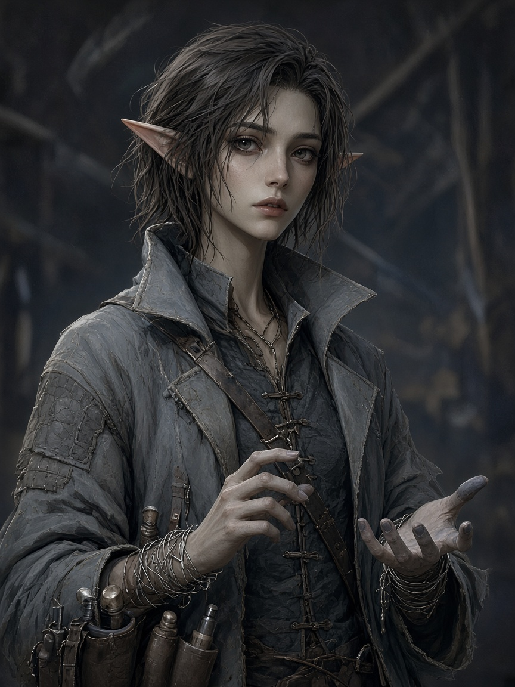
**Кадр:** Элисс
#### Рэвел
*отряд*
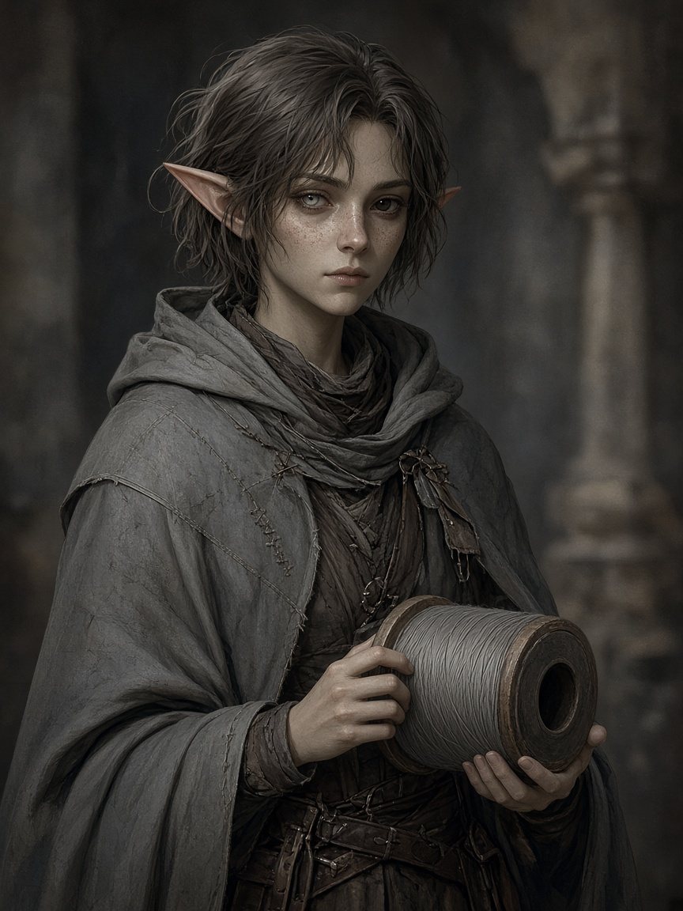
**Кадр:** Рэвел
Полный скрипт
СЕССИЯ 2 — «Чёрная нить» (дверь F · чёрный поток)
Цель: социал (одобрение магов на чёрный) → меню жертв → открытие → выброс undead → проход (слизь + сейвы по жертве) → площадь Серого Причала → Лайра / правила → клифф следа Велиана.
Не цель: контакт с Велианом (≈ сессия 6 пути); ослабить/убить душу Кардиана; Нижние дворы; side q-prichal в полном объёме.
Side (не spine): ../../../locations/seryy-prichal/quests/ q-prichal-01…03 — опционально после высадки, не блокируют след Велиана.
Запрет этой сессии: аватар Кардиана; «найти Велиана на площади».
Длина: 3.5–4.5 ч.
Общий старт: сессия 1 = глава 2 · Похороны (похороны → двери; Тандил уже назвал два потока).
Фиолетовый близнец: тот же файл, блок «дверь A».
Локи: *вход A* · *B–E* · *жертва*
Жертвы (карточка): *(жертва отряда — блок ниже в этой главе)*
Playbook: *(playbook Причала — сценарий уже в этой главе)*
Карта игроков: залочена *canon-lock-2026-09-22-seryy-prichal-map.md*
Биты
| # | Бит | Мин |
|---|---|---|
| 2.0 | Подход | 5 |
| 2.1 | Социал + инструктаж (**чёрный**) | 20–30 |
| 2.2 | Осмотр раны | 10–15 |
| 2.2b | **Меню жертв** | 10–15 |
| 2.3 | Открытие → **выброс undead** | 15–25 |
| 2.4 | Чёрный проход (сейвы по жертве) | 25–40 |
| 2.5 | Приземление на площадь | 5 |
| 2.6 | Лайра / правила / первый след | 40–70 |
| 2.7 | Клифф | 5 |
2.0 — Подход
**Кадр:** Подход
**Кадр:** Чёрная рана
Сказать:
Купель Вечных Звёзд пахнет озоном и мокрой пылью, не благовониями. У ступеней — кордон: эльфы-маги в серебряных перевязях и **дроу** с копьями, на которых выжжен знак Зеркала. Паломников нет.
Perception 12: в лазарете стоны тех, кого обожгло плетение.
Insight 13: маги сегодня напряжены сильнее, чем в обычный день — чёрный поток почти не открывали после ухода Велиана.
2.1 — Социал: одобрение на **чёрный** поток
| Кто | |
|---|---|
| **Тандил** | зачем пускают; напоминает: чёрный = **мёртвые** + Велиан туда ушёл |
| **Элиан Вечный Узел** | правила; **открывает** поток; одобрение |
| **Ваэра Ночной Клинок** | не пустит без печати Элиана |
Лок: вход только с одобрения магов. Путь = социальный.
#### Тандил
Я не отправляю вас «посмотреть дыру». Мне нужен факт: что там держит напор — и чтобы вы **вернулись**.
Сегодня, если просите **чёрный** — вы идёте туда, куда маги ошиблись с Велианом. План **мёртвых**. Не демоны.
Открытие чёрного вытащит мертвецов **в этот зал**. Будьте готовы драться здесь.
Велиана «найти за вечер» не обещаю. Следы — да. Живого — позже.
#### Элиан
Здесь стояло Зеркало. Теперь — **рана**. Мы открываем поток. Не «прыгаете в цвет». **Мы** тянем нить.
Сегодня, если согласимся: **чёрная**. План мёртвых.
Когда поток встаёт — рана **отвечает**. Из неё лезет то, чей план зовёте — **мертвецы и тот, кто ими крутит**.
Проход ≈ пять минут. Невесомость. **Чёрная слизь**, не фиолетовые рыбы. Держитесь холодной звезды-выхода.
На той стороне — не пустошь. **Город**. Серый. Живут… иначе. Не ждите, что весь город кинется на вас — и не ждите, что весь город друг.
**Плата до входа.** Чёрный не пускает даром. Каждый отдаёт **своё** — скажу после печати.
Условия: (1) не рвать руны сдерживания изнутри без нужды; (2) метка возврата — один осколок Купели на группу; (3) перевязать кровотечение до жертвы; (4) **не лить живую кровь на плиты** на той стороне, если вам объяснят правила — слушайте.
#### Одобрение = социальный узел (обязателен)
| Путь | Как | Итог |
|---|---|---|
| **A · Договор** | Уважение к Ваэре + ясные цели («след Велиана / ослабить напор мёртвых») + согласие с условиями | печать + метка; Элиан готовит **чёрный** |
| **B · Торг** | Persuasion **15** (или Insight 14 → Persuasion 13): город / низ / возврат / «не бросим Велиана» | как A |
| **C · Поручитель** | Тандил: «я поручитель» — если сорвали тон, но не хамили Ваэре | как A; долг Тандилу |
| **Провал** | Хамство / «сломаем рану» / отказ условий / «откройте оба сразу» | вход закрыт **сегодня** → mq-04 liveliness +1 |
Одобрение даёт: метка (серебряный осколок; action 1/день Advantage на сейв vs выброс раны при возврате).
#### Ваэра (коротко)
Клятва старше вашего фестиваля. Чёрный поток — не «ошибка магов для шутки». Идите — или уйдите. Не топчите руны. И **заплатите** до того, как я опущу копьё.
2.2 — Осмотр раны
**Кадр:** Чёрная рана
Сказать:
Половина купола цела. Половина — чёрная паутина трещин в холодном серебре. В центре воздух **разрезан**: серебряная рана на месте Зеркала. Пепел падает вверх и снова вниз. За плёнкой — **чёрная** тишина *(пока поток не открыт)*. Крыло архива — обвал. Кельи = лазарет.
| Навык | DC | Результат |
|---|---|---|
| Arcana | 14 | плетение живое; удар по рунам = выброс в город (сюжетно катастрофа) |
| Religion | 14 | клятва дроу древнее; чёрная нить «холоднее» фиолетовой — зовёт **имена**, не Бездну |
| Investigation | 13 | отчёт: после ухода Велиана чёрный открывали **редко**; один раз — выброс скелетов, двое магов в лазарете |
| Medicine | 12 | кровь усиливает дрожь краёв — **перевязать до жертвы** |
| Perception | 15 | за раной на миг — **плиты с буквами**, серый свет снизу (не пустошь) |
Поговорить с обожжённым (Илвесс): «Не рыбы… слизь. Холодная. Голос предлагал… не силу. Имя. Я не отдал. Руки всё равно горят холодом.»
2.2b — Меню жертв (обязательно перед открытием)
Полная таблица: *(жертва отряда — блок ниже в этой главе)* · лок sacrifice-squad.
После печати, до открытия. Элиан у раны:
Фиолетовый бьёт в тело и волю — там плата **внутри**.
Чёрный… берёт **до**. План мёртвых хочет знать, чем вы готовы быть беднее.
Каждый — свою жертву. **Память. Кровь. Голос. Тепло.** Или примите **слизь** плана на кожу.
Без жертвы он не узнает вас. Сожрёт как чужих. Выбирайте.
Ваэра: *«Клятва не запрещает плату. Клятва запрещает врать о ней.»*
Тандил: *«Я поручитель за вход. Не за то, что вы отдадите.»*
#### Правила за столом
| Кто | **каждый ПК** отдельно (и спутники NPC, если идут) |
| Отказ | вход закрыт для этого ПК сегодня **или** помеха на все 3 сейва + все 3 дебаффа при любом провале (предупредить) |
| Сразу | применить цену «сразу» из меню **до** боя выброса |
| Запись | таблица ниже |
#### Меню (игрокам вслух)
| Жертва | Сразу | Риск в проходе (провалы) |
|---|---|---|
| **Память** | одно личное воспоминание **серое** до конца сессии | HP / слоты / Insight |
| **Кровь** | 1к8 necrotic + рана | ×2 урон / ложный путь / шёпот мёртвых |
| **Голос** | только шёпот (проход + 1 ч) | скорость / silence / −10 Perception |
| **Тепло** | помеха vs cold/necrotic 1 ч | холодный набор |
| **Слизь** | помеха Dex сразу | Dex / карта / союзник-«труп» |
Точные числа — в локе.
#### Запись мастера
| ПК | Жертва | Сразу ok? | Con 15 | Int 15 | Wis 16 | Итог |
|---|---|---|---|---|---|---|
| Вирра | ||||||
| Грок | ||||||
| Балтан | ||||||
| Дранник | ||||||
| Кавил | ||||||
| Плач звезды | ||||||
| Эларион |
2.3 — Открытие потока → выброс (мёртвые)
**Кадр:** Выброс нежити
После жертв. Элиан + 2 мага тянут чёрную нить. Партия у ступеней / рун.
Сказать:
Серебряная рана вспыхивает **чёрным**. Пепел летит горизонтально. Из разреза — запах мокрой земли и холодной золы, не серы. Что-то **выходит в зал**, пока поток ещё не держит форму. Глаза без света. Кости. Голос без горла считает имена.
#### Бой — выброс открытия (Купель, чёрный)
| Сост | Статы |
|---|---|
| Волна | **4× зомби** ([dnd.su](https://dnd.su/bestiary/39-zombie/)) **или** 3× **скелет** ([dnd.su](https://dnd.su/bestiary/36-skeleton/)) |
| Некромант | **Priest** CR 2 ([dnd.su](https://dnd.su/bestiary/)) — homebrew имя **«Пепельный Зов»**; *inflict wounds* / вкус *animate dead* |
| Тактика | зомби/скелеты на фронт; некромант со ступеней у раны; не рвать руны |
| Союзники | Ваэра держит периметр (не умирает); 1 маг Элиана — *Sacred Flame*-эквивалент 1/раунд по зомби |
| Победа | поток **стабилен** — чёрная тишина зовёт внутрь |
| Бегство партии | поток схлопывается; вход сегодня закрыт; город +1 раненый маг |
Если Кардиан «давит» уже здесь (редко на сессии 2): только если мастер объявил — бафф undead из лока B–E. По умолчанию не давить: партия ещё не шумит на плане.
2.4 — Чёрный проход
**Кадр:** Чёрный проход
Сказать при входе:
Город гаснет, как свеча под ладонью. Невесомость. Чёрные **сгустки-слизь** тянутся нитями и липнут к коже. Вдалеке — холодная звезда выхода. Магия шумит в зубах — и кто-то **далеко** считает имена.
Лок: *B–E* · эффекты провалов = по выбранной жертве.
#### A. Три сейва (каждый ПК, по порядку)
| # | Сейв | DC | Провал |
|---|---|---|---|
| 1 | Con | **15** | строка жертвы «Con» |
| 2 | Int | **15** | строка жертвы «Int» |
| 3 | Wis | **16** | строка жертвы «Wis» |
Успех всех трёх: остаётся только цена «сразу».
Вкусы успехов:
Con: «Слизь давит — кости держат.»
Int: «Карта имён мелькает и гаснет — ты не тонешь.»
Wis: «Голос просит не силу — имя. Ты не отдаёшь.»
#### B. Кардиан в проходе (только по инициативе игроков)
| DC | Успех | |
|---|---|---|
| «Чужое давление / кто ведёт слизь?» | Perception **16** или Insight **16** | «Это не просто план. **Он** здесь — Кардиан, как душа.» |
| Не искали / провал | — | слизь, холод, страх — **без имени** |
Не предлагать проверку сам. Не раскрывать Кардиана без броска.
#### C. Заплыв — индивидуально, DC 14
Athletics / Acrobatics / Arcana / Religion / Insight — один бросок на ПК.
| Исход | Эффект |
|---|---|
| Успех | чистый выход; обычный Dex (плюс дебаффы жертвы) |
| Провал | 1к8 necrotic (слизь хлещет); **помеха** на Dex при посадке |
| Провал на 5+ | + *blinded* до конца след. хода после посадки **или** буксир (реакция союзника-успеха, Athletics 12) |
| Нат. 1 | как провал 5+; без буксира — blinded + помеха |
*Провал сказать:* «Свет уезжает. Слизь хлещет. Пустота вытолкнет — кувырком. Под ногами уже не пустошь — камень.»
2.5 — Приземление (площадь, не пустошь)
**Кадр:** Площадь
#### Лайра
*встречающая*
**Кадр:** Лайра
Сказать:
Вас выталкивает не на пепел — на **камень под ногами**.
Площадь. Широкая. Серая. Под ногами — плиты с **именами**.
Воздух пахнет холодной золой, мокрой бумагой и остывшим чаем. Небо без звёзд; свет снизу.
Фигуры идут по делам: души, плотные «серые», фонарщики с колбами. **Не бросаются**.
В центре — фонтан с медленной серой пылью. Табличка: **«Имя нести — долг. Имя красть — грех.»**
На краю зрения — слишком чёрный плащ в переулке. Город не агрессивен. **Не весь город добр.**
Dex DC 13 → провал 2к8 дробящего (учесть ×2 / помеху Dex / жертву).
Кровь на плитах от падения: если льют живую кровь нарочно — Insight толпы 12: осуждение; Саэрн (стражи) может подойти позже (playbook). Случайный порез от падения = предупреждение, не бой.
Карта: выдать карту игроков Серого Причала (без спойлеров mq-04).
2.6 — Лайра / правила / первый след
**Кадр:** Лайра
**Кадр:** Лайра Пепельная
Место 1 playbook — Площадь Угасших Имён.
НПС: Лайра Пепельная.
#### Встреча (сразу или через 1–2 минуты)
Лайра у западной арки. Полупрозрачная; пепельные косы; глаза-угольки.
Живые.
Имена?
*(кивок к плитам)* Правила Причала: не лить кровь на плиты. Не красть имя. Не жечь чужой долг.
Три ориентира — бесплатно. Дальше — за имя, за историю, за долг.
| Путь | Как | Итог |
|---|---|---|
| **A · Имена** | Назвать себя честно | Лайра кивает; +1 к соц. с писцами сегодня; запишет «гости» |
| **B · Отказ** | «Имён не дадим» | подозрение; Insight 14 — она не враг, но город **запомнит** отказ |
| **C · Ложь** | чужое/шутка | Insight Лайры 14: чует; отказ в ориентирах; слух уйдёт к Чёрным плащам |
Три бесплатных ориентира (выбрать / дать все коротко):
1. Фонтан Пыли — центр; клятвы; смотритель Пэл.
2. Архив / писцы — имена; слухи.
3. Край — юг/за стеной быта; «туда уходят те, кого город не держит. И те, кого ищут.»
Insight 14: про «ищут» — не про партию; про других живых, что прошли раньше.
#### Слух о Велиане (сессия 2 пути — слабый)
| Как | DC | Результат |
|---|---|---|
| Спросить Лайру «эльфы / шестеро / Дозор» | — | «Шестеро серых плащей. Не души. Ушли к Краю. Давно по здешнему.» |
| Investigation у фонтана / плит | **16** | обрывок нити / знак без крови — не живой контакт |
| Вставка M2 / M6 (если время) | см. inserts | усилить след |
Не выводить на Велиана сегодня. DC живого контакта — позже (spine: ~сессия 6).
#### Опционально до клиффа (выбрать одно, 15–25 мин)
| # | Сцена | Файл |
|---|---|---|
| 1 | Фонтан + Пэл; монета Дозора (1к6 playbook = 5) | playbook место 2 |
| 2 | Одна вставка **M** (d8) | *(random inserts — позже)* |
| 3 | Чёрный плащ в толпе (Stealth vs 14) — только слежка, не бой на площади | playbook / M7 |
| 4 | Серая пыльца — Perception 16 = «это Он» (намёк Кардиана, без бури) | M5 |
Бой на площади по умолчанию — нет. Только если партия нарушила правила крови/имён или напала первой.
#### Правила Причала (сказать вслух, если Лайра успела)
Имя нести — долг. Имя красть — грех.
Кровь живых на плитах — оскорбление площади.
Гости могут ночевать, если Писец записал или Лайра поручилась.
За Краем правила площади **не держат**.
2.7 — Клифф
**Кадр:** Ворота Края
**Кадр:** Велиан
**Кадр:** Каэлор
Сказать:
С края площади, куда кивнула Лайра, серость густеет: там кончается «быт» и начинается **Край**.
В толпе мелькает обрывок серого — или только кажется. Шестеро эльфов сюда уже ступали. Живыми их сегодня не видно.
Пепельный Зов остался позади, в Купели. Здесь город дышит именами. Где-то далеко песок может стать слишком серым — но не сейчас.
Новость для игроков: закрепились в Сером Причале; след Велиана = Край, не площадь; возврат через метку Купели возможен, но маги снова откроют поток (и снова будет выброс).
Новость мастеру: mq-04 liveliness ступень 1; отметить жертвы ПК; если Perception на Кардиана прошёл — отметить «партия знает душу в проходе».
XP сессии 2 (дверь F)
| Мобы | по MM (выброс открытия) |
| `xp_quest` | 2500–3500 |
| `xp_personal` | 250–500 (жертва / социал Лайры / след Велиана / Кардиан-Perception) |
Если не дверь F
Сессия 2 не этот файл:
| Дверь | Prep |
|---|---|
| **A** | [глава 2 · Похороны](02-sessiya-1-pokhorony.md) — фиолетовый / Маяк |
| B/C | mq-05 + book-chapter / Милана |
| D | mq-03 дорога |
| E | mq-06 акт 0 |
Чеклист мастера
- [ ] Сессия 1 сыграна / двери; Тандил про **два потока**
- [ ] Социал одобрения на **чёрный**
- [ ] Жертвы записаны **до** открытия
- [ ] Выброс **undead + Пепельный Зов** (не демоны)
- [ ] Сейвы 15/15/16 → дебаффы **по жертве**
- [ ] Кардиан только если игроки сами ищут (Perception/Insight 16)
- [ ] Выход = площадь + карта игроков
- [ ] Лайра: правила + 3 ориентира + слабый след к Краю
- [ ] **Нет** живого Велиана; **нет** аватара Кардиана
- [ ] Максимум 1 опциональная вставка до клиффа
Дальше на круге: хаб Причала — spine биты 3–5 · inserts M/N · playbook места 2+.
Оглавление · ← 3 · Дверь A · Далее → 5 · Дверь D
5 · Дверь D · Серебряный Порог
Открой, если выбрали Лес Хранителей. Веди сверху вниз: кадр → Сказать → таблица.
СЕССИЯ 2 — «Пустой камень» (дверь D · mq-03)
Цель: Кавил инициирует портал → расследование украденного камня (шпионы Ордена) → хранители открывают → Храм Серебряного Порога → пути к Силвании и Малфуриону → клифф.
Не цель: Элессар вживую; монастырь без разговора; план вторжения Ордена.
Длина: 3.5–4.5 ч.
Биты
| # | Бит | Мин |
|---|---|---|
| 2.0 | Верхний город / зал порталов | 5–10 |
| 2.1 | Кавил + хранители: ниша пуста | 15–20 |
| 2.2 | Расследование камня | 60–90 |
| 2.3 | Бой / допрос шпионов | 20–35 |
| 2.4 | Ритуал → прыжок | 5–10 |
| 2.5 | Храм: имена, чай | 30–45 |
| 2.6 | Подсказки Силвания / Малфурион | 15–25 |
| 2.7 | Клифф | 5 |
2.0 — Верхний город
**Кадр:** Зал порталов
Сказать:
Элиэлор пахнет ладаном похорон и холодным металлом. Здесь ходят не паломники — **служащие короны**. За двойной дверью с печатью Совета — зал, где воздух звенит, как натянутая струна: **порталы**.
| Проверка | DC | Успех |
|---|---|---|
| Perception | 12 | ниши с камнями-оправами; одна ниша — пустая, свежий скол |
2.1 — Кавил + хранители
**Кадр:** Маэрис Ключ-в-Камне
**Кадр:** Брум Кремнеладонь
**Кадр:** Селена Печать-Линий
| Кто | Роль |
|---|---|
| **Кавил** | может инициировать; не рельс |
| **Маэрис Ключ-в-Камне** | старший; ритуал |
| **Брум Кремнеладонь** | оправа |
| **Селена Печать-Линий** | договор линии «Мост ↔ Порог» |
Маэрис — Сказать:
Линия в Лес — не в столицу. В **Храм Серебряного Порога** — порог для посланников.
Камня нет. Без камня я не открою. Ищите. Мы подождём — не вечно.
Брум: «Сорвали. Не выронили.»
Селена: «Кто крадёт камень Порога — не вор ради золота. Ему нужно, чтобы вы не ушли.»
2.2 — Расследование (полный пакет)
Ставка: без камня прыжка нет. Поиск только в Лунном мосте.
| Путь | Суть | Проверки | Провал |
|---|---|---|---|
| **A · След** | ниша → царапины → склад/чердак Элиэлора | Investigation **14** → Survival **13** → Stealth **14** | ложный след (−1 ч / шум) |
| **B · Люди** | слуги зала, чёрный рынок печатей | Persuasion/Intimidation **14**; Insight **15** | донос; жгут улики |
| **C · Магия** | отпечаток орденской стали на нише | Arcana **15**; Religion **14** | ложный «след Разлома» |
| **D · Сила** | выбить ячейку, если знают адрес | бой ниже | гражданские ранены; Тандил зол |
#### Биты (порядок гибкий)
| # | Сцена | Механика / текст |
|---|---|---|
| 1 | Ниша пуста | Маэрис / Брум — см. выше |
| 2 | Первая улика | Investigation 14: волокно серо-красного сукна (Орден) **или** чужое клеймо на крюке |
| 3 | Свидетель | «двое в траурных плащах» после похорон; Insight 13: плащи **не** местных |
| 4 | Ячейка | чердак над лавкой писцов / склад благовоний; Stealth 14 тихо, иначе бой |
| 5 | Шпионы | см. **2.3** |
| 6 | Камень | ларец со свинцовой обмоткой; Arcana **12** снять безопасно |
| 7 | Возврат | Маэрис+Брум+Селена; ритуал 1 мин |
Мораль: отдать шпиона Тандилу или отпустить с клеймом «мы вас видим».
2.3 — Бой: ячейка Ордена
| Роль | Кто | Статы (5e 2014) | Заметки |
|---|---|---|---|
| Лидер | 1× **Spy** | [dnd.su/Spy](https://dnd.su/bestiary/spy/) | легенда «купцы с юга» |
| Мясо | 2× **Thug** | [dnd.su/Thug](https://dnd.su/bestiary/thug/) | |
| Погоня (опц.) | 1× **Scout** | если бегут по крышам | Athletics/Acrobatics DC 14 |
Допрос (успех): «Не пускать адъютантов / Героев в Лес.»
Стоп: не выдавать план большого вторжения в Элдерин.
Награды сцены: 50–120 зм; камень; xp_quest 800–1500 за расследование.
2.4 — Ритуал → прыжок
**Кадр:** Прыжок портала
Камень в нишу. 1 минута серебряного света.
Сказать:
Мир складывается. Запах мокрой коры бьёт в лицо. Под ногами — камень Порога.
2.5 — Храм Серебряного Порога
**Кадр:** Порог · высадка
**Кадр:** Илсара
**Кадр:** Оррен
**Кадр:** Тэвин
| НПС | |
|---|---|
| **Илсара** | имена / удивление |
| **Оррен** | страж арки |
| **Тэвин** | чаши / чай |
Сказать (Илсара):
…Портал. Без свитка. Без гонца.
Вы либо очень важные, либо очень глупые.
Имена. Государство. Цель в Лесу.
Запись имён обязательна. Чай — 5–10 мин отыгрыша.
2.6 — Подсказки (обязательно)
**Кадр:** Зал имён / чаши
**Кадр:** Саэла
После записи / чая Илсара или Саэла:
| Куда | Что сказать |
|---|---|
| **Силвания** | «Столица Леса — **Силвания**. Знак серебряного листа в кольце. Дорога гонцов. У ворот: Порог вас записал.» |
| **Малфурион** | «Знак копыта в корне. Тропа кругов. Без меча наперевес. Ярость Бури уже слушает — совет ещё не собран.» |
Монастырь — только если спросят про короля / Элессара:
Высокородных шлют служить в монастырь на северной чаще. Король Аэлендора там **служил**. Сейчас его там нет уже много лет… но **искать** иногда начинают оттуда.
**Кадр:** Элессар · только если копают (не вживую)
**Кадр:** Малфурион · цель тропы, не встреча сегодня
2.7 — Клифф
**Кадр:** Три тропы
Сказать:
За задней аркой — три столба. Два пути названы ясно: **Силвания** и **круги Малфуриона**. Третий — глушь без провожатых.
Позади — портал, за которым Лунный мост остался без вас. Разлом там не спит.
XP
| Расследование / бой | по таблице 2.3 |
| `xp_quest` с.2 | 2500–3500 |
| `xp_personal` | 250–500 (Кавил / сильный допрос) |
Чеклист
- [ ] Кавил сам инициирует (или партия просит)
- [ ] Камень найден **до** прыжка
- [ ] Шпионы = Орден; **нет** Элдерин/вторжение
- [ ] Храм: удивление, не помпа
- [ ] Чётко: **Силвания** + **Малфурион**
- [ ] Монастырь — только по разговору
- [ ] Нет Элессара вживую
Оглавление · ← 4 · Дверь F · Далее → 6 · Дверь E льды
6 · Дверь E · Туманный Щит
Открой, если выбрали льды / доспехи (Эларион тянет на север).
СЕССИЯ 2 — «Северная ниша» (дверь E · mq-06 · льды)
Цель: Эларион → зал порталов → украденный северный камень → Орден → портал → Лагерь Туманного Щита → обязательная стычка с нежитью → клифф (силуэт Лианэи).
Не цель: бой с Лианэей; изъятие Доспехов; ветка меча/сапог; имя Кардиана.
Длина: 3.5–4.5 ч.
Биты
| # | Бит | Мин |
|---|---|---|
| 2.0 | Эларион / сборы | 10–15 |
| 2.1 | Северная ниша пуста | 15–20 |
| 2.2 | Расследование камня | 60–90 |
| 2.3 | Шпионы / возврат | 20–35 |
| 2.4 | Ритуал → прыжок | 5–10 |
| 2.5 | Лагерь Туманного Щита | 25–40 |
| 2.6 | Стычка у линии тумана | 25–40 |
| 2.7 | Клифф + новость дома | 5–10 |
2.0 — Толчок Элариона
**Кадр:** Северная ниша
**Кадр:** Зал порталов
Сказать:
Вы уже знаете: сестра Элариона — во льдах Ледяного Союза, «не живая и не мёртвая», в Доспехах, зовёт брата. Сегодня он не отпускает тему.
Эларион (или партия с ним) → Кавил / зал порталов — «северная линия», не Лес.
Кавил может поддержать, но не главный заказчик вечера.
2.1 — Северная ниша
**Кадр:** Маэрис
Те же хранители: Маэрис, Брум, Селена.
Маэрис — Сказать:
Линия **Северная**. Не Порог. Не Лес. Ведёт к дварфам у тумана — **Туманный Щит**.
Камня нет. Без него я не открою. Как с Порогом: ищите.
| Проверка | DC | |
|---|---|---|
| Perception | 12 | соседняя ниша Порога: если D не играли — камень на месте; если играли — уже стоит. Не путать. |
2.2–2.3 — Расследование северного камня
Тот же каркас, что у двери D, но другой камень / другая ниша.
| Путь | Проверки | Провал |
|---|---|---|
| След | Investigation **14** → Survival **13** → Stealth **14** | ложный след на юг |
| Люди | Persuasion/Intimidation **14**; Insight **15** | донос |
| Магия | Arcana **15** | путают с фиолетовой раной |
| Сила | бой ячейки | шум в верхнем городе |
Бой ячейки: 1× Spy + 2× Thug (dnd.su).
Допрос: «на север нельзя» / «смерть ходит строем» — без карты вторжения на юг.
Камень в свинцовом ларце; Arcana 12.
2.4 — Ритуал → прыжок
Камень в северную нишу. 1 минута. Холод вместо серебра коры.
Сказать:
Мир складывается. В лицо бьёт мороз и запах кузнечного дыма. Под ногами — мёрзлая земля и доски настила.
2.5 — Лагерь Туманного Щита
**Кадр:** Туманный Щит
**Кадр:** Хельда Щитолом
**Кадр:** Брорр
Удивление дварфов («портал без гонца»). Комендант Хельда Щитолом; Брорр если с моста.
Хельда / Брорр — Сказать:
Живые из Мостового портала. Либо герои, либо идиоты.
Туман жрёт дозоры. За линией — **строем**. Леди Льда.
*(если Эларион назван)* Брат? Тогда тебе дурацких советов не дам. Но лагерь — не твой трон.
Показать: частокол, рога, щиты к северу, серый туман на равнине.
2.6 — Стычка (обязательно)
**Кадр:** Линия тумана · стычка
Разведка тумана лезет к частоколу / к дыре в дозоре.
| Волна | Кто | Статы | Заметки |
|---|---|---|---|
| Основная | 4× **Зомби** *или* 3× **Вурдалак** | [dnd.su](https://dnd.su/bestiary/) | под ур. 8–9 урезать HP |
| Жёстче (опц.) | +1× **Жрец** культа льда | только если рвутся вперёд |
Цель боя: отбить прорыв, не гнаться на равнину.
Если лезут в туман глубже 60 фт без плана — +2 зомби каждые 2 раунда; Хельда орёт вернуться.
После: раненый дозор — «она смотрела». Только Эларион (Wis 14) чувствует зов в кости; остальные — холод.
2.7 — Клифф
**Кадр:** Силуэт Лианэи
**Кадр:** Лианэя · только силуэт
Сказать:
За частоколом равнина белеет. В тумане — ряды. Далеко, на гребне, силуэт в доспехах, от которых несёт могилой. Голос — только брату: *«Иди ко мне.»*
Лагерь стоит. Портал за спиной ведёт домой. Разлом там не спит.
Новость дома (ровно 1):
| d4 | Новость |
|---|---|
| 1 | Разлом: вылазка в низу, Дозор недосчитался |
| 2 | Орден жмёт Сильванор — слух о трещине стены |
| 3 | Хребет у моста требует «учёт» яиц |
| 4 | Милана молчит в кольце дольше обычного |
XP
| Расследование / бой | камень + стычка |
| `xp_quest` с.2 | 2500–3500 |
| `xp_personal` | 500 Элариону; 250 за лагерь/Брорра |
Чеклист
- [ ] Толчок = Эларион (видение / сестра)
- [ ] Северная ниша ≠ Порог; камень **до** прыжка
- [ ] Шпионы = Орден; нет Элдерин
- [ ] Прыжок → **Туманный Щит**
- [ ] Обязательная стычка
- [ ] Нет изъятия Доспехов / боя с Лианэей
- [ ] Нет Кардиана; только льды (не меню меча)
Оглавление · ← 5 · Дверь D · Далее → 7 · Дверь E·меч
7 · Дверь E·меч · Город Пламени
Открой, если выбрали меч / Хребет (открытый мир; Элариона можно переубедить).
СЕССИЯ 2 — «Дипломатический двор» (дверь E · mq-06 · меч)
Цель: союзный портал → посольский двор Города Пламени → добыть сведения о реликвии (не публично) → клифф (пик / Зариакс).
Не цель: изъять Меч; бой с древними; яйца; Камнеград-месть весь вечер; Кардиан.
Длина: 3.5–4.5 ч.
Биты
| # | Бит | Мин |
|---|---|---|
| 2.0 | Выбор / сборы | 10–15 |
| 2.1 | Портал союзников | 10–15 |
| 2.2 | Дипломатический двор | 25–40 |
| 2.3 | Расследование сведений | 60–90 |
| 2.4 | Давление / отказ | 20–35 |
| 2.5 | Клифф | 5–10 |
2.0 — Выбор меча
**Кадр:** Саэрис Пепельный
**Кадр:** Кезарр
Партия сама выбрала меч. Кавил/Тандил: портал к Хребту есть — союзный канал. Не обещают «отдадут меч».
Сказать:
Союз с Хребтом — не дружба. Они ненавидят Звёздную Пыль сильнее, чем любят вас. Авангард получил приказ помочь Аэлендору. Это не приглашение к их святыням.
2.1 — Портал
**Кадр:** Прибытие в жар
Не украденный камень (это льды/Лес). Союзный портал: зал Элиэлора / узел гарнизона.
Сказать:
Мир складывается. В лицо бьёт сухой жар. Под ногами — плиты из тёмного стекла. Над двором — пепельное небо и силуэт хребта.
2.2 — Дипломатический двор
**Кадр:** Дипломатический двор
**Кадр:** Алазар · не на приёме гостей
**Кадр:** Эридан · архивы/обсерватория как слух
**Кадр:** Корвар
Встречают вежливо и холодно. Не трон Алазара — приёмная для чужих.
| Имя | Роль |
|---|---|
| **Саэрис Пепельный** | атташе двора; улыбка без тепла |
| **Кезарр Тал** | может «сопроводить» / бросить тень Камнеграда |
Саэрис — Сказать:
Герои Стража. Союзники на бумаге. Здесь вы гости — не соискатели наших реликвий.
Спрашивайте о войне с Пылью. О гарнизоне. О пепле.
О том, что лежит на пиках — **не спрашивайте вслух**. Уши у стен чешуйчатые.
| Проверка | DC | |
|---|---|---|
| Insight | 14 | он знает, *что* ищут; приказ — не подтверждать |
2.3 — Расследование (ядро)
Сведения о Мече не в открытом доступе.
| Путь | Как | Проверки | Провал |
|---|---|---|---|
| Дипломатия | союз / Пыль / «демоны заберут» | Persuasion **16–18** | отказ жёстче; −реп |
| Архивы | слух об Обсерватории Эридана; подкупить писца | Investigation **15**; Stealth/подкуп | донос Саэрису |
| Тень | намёк на **Зариакса** / Ночную Чешую | Insight **14**; контакты низа | ложный след |
| Сила | угрожать / лезть на пик | бой / Athletics | выдворение |
Выдать 1–2 факта к клиффу:
1. «Реликвия Падения» на пике над столицей — Пепельный Гребень.
2. Триумвират не делится. Охрана пика ≠ городская стража.
3. Зариакс может знать больше — за цену.
4. Разлом Империи не у пика — искать меч «у Разлома» = ложный путь.
**Кадр:** Зариакс · намёк, не встреча
**Кадр:** Звёздная Пыль · общий враг (фон)
**Кадр:** Пепельный Гребень
2.4 — Давление
Саэрис — Сказать:
Хватит. Вы гости войны с Пылью — не охотники за нашим огнём.
Уйдите с тем, что заслужили: **слухом**. Или останьтесь — и мы решим, союзники вы или воры.
Опц. стычка (только если лезут силой):
| Кто | Статы |
|---|---|
| 2× драконорождённых стража | Veteran ([dnd.su](https://dnd.su/bestiary/veteran/)) |
Не обязательна.
2.5 — Клифф
**Кадр:** Пепельный Гребень вдали
Сказать:
У вас нет меча. Есть нитка: пик, запрет, имя, которое нельзя произносить громко во дворе.
За пеплом хребта кто-то смотрит — не Алазар. Возможно, тот, кто не сидит в триумвирате.
Портал за спиной ещё дышит жаром. Дома тикают другие часы.
Новость дома (1):
| d4 | |
|---|---|
| 1 | Льды: мёртвые густеют |
| 2 | Орден у Сильванора |
| 3 | Пыль: флот шевелится |
| 4 | Разлом у моста: вылазка |
XP
| Расследование | по проверкам |
| `xp_quest` с.2 | 2500–3500 |
| `xp_personal` | 500 за ключ о пике / Зариаксе |
Чеклист
- [ ] Выбор меча = партия
- [ ] Портал → **двор**, не пик
- [ ] Сведения кодом, не «карта сокровищ»
- [ ] Меч **не** изъят; яйца **не** тема
- [ ] Нет Кардиана
- [ ] Клифф = Пепельный Гребень / Зариакс
Оглавление · ← 6 · Дверь E льды · Далее → 8 · Галерея
Приложение · Галерея лиц
Адмирал флота Пыли
**Кадр:** Адмирал флота Пыли
Алазар Огненное Сердце
**Кадр:** Алазар Огненное Сердце
Брорр
**Кадр:** Брорр
Брум Кремнеладонь
**Кадр:** Брум Кремнеладонь
Ваэра Ночной Клинок
**Кадр:** Ваэра Ночной Клинок
Велиан Полутень
**Кадр:** Велиан Полутень
Зариакс Теневой Клык
**Кадр:** Зариакс Теневой Клык
Илсара Пепельнолист
**Кадр:** Илсара Пепельнолист
Каэлор Крайний
**Кадр:** Каэлор Крайний
Кезарр Тал
**Кадр:** Кезарр Тал
Кеш
**Кадр:** Кеш
Корвар Тяжёлая Лапа
**Кадр:** Корвар Тяжёлая Лапа
Корел Клинок Луны
**Кадр:** Корел Клинок Луны
Лайра Пепельная
**Кадр:** Лайра Пепельная
Леди Ириэн
**Кадр:** Леди Ириэн
Лианэя
**Кадр:** Лианэя
Малфурион
**Кадр:** Малфурион
Маэрис Ключ-в-Камне
**Кадр:** Маэрис Ключ-в-Камне
Милана
**Кадр:** Милана
Наэра Черноперо
**Кадр:** Наэра Черноперо
Орра
**Кадр:** Орра
Оррен Когтевой Страж
**Кадр:** Оррен Когтевой Страж
Рэвел Узлослёд
**Кадр:** Рэвел Узлослёд
Сарель Пепельный Договор
**Кадр:** Сарель Пепельный Договор
Саэла Троповед
**Кадр:** Саэла Троповед
Саэрис Пепельный
**Кадр:** Саэрис Пепельный
Сборщик Огарков
**Кадр:** Сборщик Огарков
Селена Печать-Линий
**Кадр:** Селена Печать-Линий
Селенис Безмолвная
**Кадр:** Селенис Безмолвная
Сильванара
**Кадр:** Сильванара
Сильвен Тихий Шаг
**Кадр:** Сильвен Тихий Шаг
Тандил (похороны)
**Кадр:** Тандил (похороны)
Тэвин Счётчик Чаш
**Кадр:** Тэвин Счётчик Чаш
Хельда Щитолом
**Кадр:** Хельда Щитолом
Элессар I
**Кадр:** Элессар I
Элиан Вечный Узел
**Кадр:** Элиан Вечный Узел
Элисс Пепельная Нить
**Кадр:** Элисс Пепельная Нить
Эридан Звёздный Зрачок
**Кадр:** Эридан Звёздный Зрачок
Тандил · база
**Кадр:** Тандил база
Оглавление · ← 7 · Меч